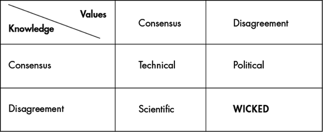
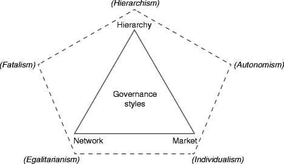

2.1 Introduction
2.1.1 Sustainability Governance from Rio to Rio
The Rio-Summit of 1992 marked the beginning of a new era. In the aftermath of the bipolar world, new actors, new challenges as well as new potential solutions emerged onto the scene. However, the mainstream view concerning this increasing diversity – both in scholarly circles and by policy makers – viewed it as being at odds with effective responses to global challenges related to environment and development. They also felt that it supported common (inter-) governmental approaches. The main merit of the Rio-Summit was that it sketched out a new set of challenges and opportunities running counter to this mainstream perception. It was concluded that issues such as cultural diversity, diversity of actors, diversity of institutional mechanisms, and response actions cutting-across well-established sectoral boundaries exemplified the very notion of sustainable development and hence could not be alienated any longer from an agenda for action.
Twenty years later, we live in a different world; it has become hot, crowded, spiky, turbulent and multi-polar. Governments on all levels and international organisations are struggling to implement sustainability strategies, and at the same time find it difficult to embrace the notion of diversity in their attempts to put the objectives of the Rio Declaration into action. This poses the question of whether it is possible to change the common perception of diversity from a potential hindrance to a genuine part of the solution. Would this imply that cultural diversity should be translated into political and institutional diversity? If this is the case, it might threaten vested interests. In addition, how would this relate to the broadly shared conviction that universal aims are also needed, such as human rights? The paradoxical challenge is that sustainability requires shared objectives, which should be achieved by diverse actions pursued through a multitude of governance arrangements at different levels and with different actor constellations, while recognising the varying needs of different countries and communities within them.
The question is whether the growing recognition of the need for adaptivity to different situations could help in bridging the gap between shared objectives and diverse action. The majority of the different situations referred to above pertain to the climate change debate, but also emerge from more general lessons learned in many issue areas spelled out by Agenda 21. As the focus of sustainable development has shifted increasingly towards implementation, compared to the days of Rio 1992, we may raise the question, 20 years later, of whether too strong a focus on common actions, on legally-binding and global agreements alone, has also contributed to the existing lack of implementation.
Another contextual change compared to 20 years ago is that the Internet have made communication and exchange of ideas extremely fast. Social media have partly taken over from classical media. The world is much more knowledge-based than two decades ago. However, at the same time classical natural and social sciences have lost part of their ‘natural’ authority. Like the media, the field of knowledge production has become more diffused and more participatory. Additionally, in the sciences there are tensions between classical, disciplinary science and transdisciplinary knowledge development in which practical and lay knowledge is taken on board. Last but not least, political systems are moving towards more participative forms in many parts of the world. This does not mean that there is a clear convergence towards one type of democracy, but that pluralism is also increasing in this domain. The turbulence and tensions within, and between old and new forms of politics, media and science has been framed as the emerging ‘knowledge democracy’ (in ’t Veld 2010b).
Other conditions that co-determine which governance designs for sustainable development could work well in certain situations are a nation or region’s history, and the existing institutional frameworks. The latter are ‘frozen’ expressions of policy theories from, in some cases, decades ago.
It is with reference to this context that this chapter analyses how cultural diversity might contribute to, rather than hinder, sustainability governance. The key question it addresses is: How can cultural diversity contribute to sustainable development (meta)governance, and how can it be prevented from being a hindrance? Before we embark on this analysis, a short discussion on the ambiguity of the term sustainable development is presented.
2.1.2 Sustainable Development: A Value-Laden Concept
Sustainable development, as defined by the 1987 World Commission on Environment and Development (Brundtland Commission), is:
development that meets the needs of the present without compromising the ability of future generations to meet their own needs.
The focus on the freedom of choice of future generations in this widely-used definition makes sustainability a modern social-ecological version of Kant’s categorical imperative: ‘everybody should act in a way that the maxim of this behaviour could become a maxim applicable to all’ (Spangenberg 2005: 31). Since the definition of the Brundtland Commission, the normative idea of linking sustainability and development has evolved. During the Rio World Summit on Sustainable Development in 1992, the Brundtland norm of intergenerational justice was elaborated with the aim of bringing about a balance between social, ecological and economic systems, using the terms people, planet and profit or prosperity. The term development can be seen neutrally; like in biological systems, development can be constructive or destructive. With development of societies, economic development (growth) can be the intention, but on occasions the motivation is also with regards to the selection of parameters combined in the Human Development Index. In the context of sustainable development, development usually points at a process character: sustainable development is a societal learning process aiming at developing more sustainable societies. However, it is also based on the concept of progress that may not be shared by all who are ipso facto interested in sustainable development. Moreover, the term development can be seen as culturally related to processes of colonialism, capitalism (including neo-liberalism) and resource exploitation (Oswald Spring 2009).
2.1.2.1 The Cultural Dimension
Like all normative political concepts, sustainable development means something different in different cultural and politico-administrative contexts, for example in Western welfare states, in emerging democracies, and in non-democracies. The concept is used differently in BRIC1 countries than in many African countries. Policy makers in Vietnam or Bangladesh use definitions which differ from those employed by their counterparts in Germany or Paraguay. Moreover, sustainable development triggers different discussions at the global UN headquarters than it does locally, for example between villagers and professionals implementing an irrigation strategy in a Nepali village. Even though this insight seems trivial, it is surprising to witness the struggles of the international community to draft culturally and, moreover, context-sensitive policies for sustainable development. A concept like the ‘Green Economy’ adds a case in point with regards to how difficult conceptual discussions can become if it is not based to a certain degree on a shared understanding.
The fact that sustainable development is a normative concept with a Western cultural flavour implies that it may conflict with non-Western cultures. Indeed, this has happened in the past and remains a frequent occurrence. However, the fact that there is, apart from the 1987 Brundtland definition, no global agreement on the exact meaning of sustainable development, also presents an advantage: the concept is in principle adaptable to different cultures. In China, for example, since around 2002, the Communist Party has pursued a ‘harmonious society’ in a ‘harmonious world’, with a development model which is similar to the Brundtland definition (Ferro 2009).
2.1.2.2 Top-Down Governance
Environmental governance and sustainability governance are currently dominated by a top-down practice of steering, at least on the global level, although many politicians orally suggest a preference for cooperation and participation. Examples of the top-down approach can be found in climate policy. Climate change has politically and scientifically become framed as a global (upcoming) disaster, for which centralist and legally binding agreements are usually presented as the sole solution. This has its merits because it enables a bird’s eye, global perspective and is an expression of political urgency, but also has downsides. The impacts of climate change vary enormously in different geographical areas, and some argue that the centralist frame has also centralised the research budgets. The result is that there is a lack of money for research regarding climate change mitigation and adaptation on specific regional situations, and that it has led to a focus on globalised knowledge which ‘erases geographical and cultural difference and in which scale collapses to the global’ (Hulme 2010). Hulme argues that in a world which ‘possesses a multiplicity of climates and a multiplicity of cultures, values and ways of life’, such globalised knowledge is de-contextualised top-down and detached from meaning-making. Examples mentioned are global climate models, global planetary conditions to define sustainability, global indices of human vulnerability to climate change, the Stern Review with its singe metric of globalised monetary value, and the 2° climate change target. Barnett and Campbell (2010) show how such an attitude leads to consider Pacific islands as uniform objects: they are always pictured as vulnerable, powerless and ignorant.
With regard to sustainable development, it is illustrated that much of the energy during the intergovernmental discussions for the preparation of the UNCSD ‘Rio’ 2012 conference has concentrated on the roles and institutional form of a global sustainability organisation.
2.1.2.3 ‘Wicked’ Sustainability Challenges
This hierarchical bias contradicts the complexity and what political scientists call ‘wickedness’ of the challenges of sustainable development. The notion of ‘wicked problems’ (Rittel and Webber 1973), which refers to a situation where there is neither consensus on values nor on knowledge (Fig. 2.1) is crucial for understanding sustainability: ‘wicked problems’ are a permanent sources of conflict. Some of the typical characteristics of wicked problems are (Rittel and Webber 1973: 162–166):

Fig. 2.1
Typology of problems
- Every wicked problem is essentially unique.
- There is no definitive description of a wicked problem.
- Solutions to wicked problems are not true-or-false but good-or-bad.
- Every implemented solution to a wicked problem is a ‘one-shot operation’ which leaves traces: it changes the problem.
- There are no criteria which enable one to prove that all solutions to a wicked problem have been identified and considered.
In addition, the result of tackling such problems is often path-dependent, and the problems are characterised by lock-in effects with regard to physical (long lead time, bounded by the use of a specific technique or infrastructure) and social (mentality, life styles). The sustainable development agenda is filled with wicked problems. Examples are the future of energy production (how can we become independent of fossil fuels and of nuclear energy?), infrastructure projects (how can we improve railway systems without destroying historical cities and natural sites?), biofuels (how can we increase the use of biofuels without decreasing the land surface available for food production?) and climate change (how can we achieve a global agreement on carbon-neutral economies while acknowledging the right of developing nations to increase their prosperity?). Wicked problems are a product of the increasing complexity and uncertainty of the physical world as well as our societies, and of our cognitive capabilities and values to cope with these issues.
The point is that governance based on hierarchical or market mechanisms often fails when it is applied to wicked problems (Meuleman 2008: 348). A hierarchical view assumes that there are clearly defined problems and that there can be a clear line of command in the problem-solving process. Market governance assumes that the ‘invisible hand’ of (internal or external to organisations) markets solves problems when the ‘right’ incentives and instruments are in place.
Wicked problems are value-laden, as are the terms ‘governance’ and ‘sustainable development’, and they are also characterised by disagreement on the level of values. Therefore, values and traditions, and hence the cultural dimension, must be included in sustainability governance. Wicked problems escape the logics of hierarchies and markets. Network governance accepts chaos and unpredictability, and also assumes that value conflicts are part of the game and should be dealt with. Therefore, dealing with wicked sustainability problems seems to require at least a substantial network governance dimension in the total approach. The usefulness of additional legal constructions and market-type incentives depends on the context. In this chapter I will focus on the cultural dimension of sustainability governance, but it is also necessary to relate this to the two other themes, the centralist bias and the neglect of wickedness of sustainability problems. After this short introduction, the next step is to discuss the relation between cultural diversity and sustainable development (Sect. 2.2). This will be linked to the governance debate (Sect. 2.3). Following this, the role of cultural diversity will be discussed in relation to arguments in favour of uniformity (Sect. 2.4). A framework for a positive contribution of cultural diversity to sustainability governance will be developed, based on insights into the governance of governance, or metagovernance (Sect. 2.5). Sect. 2.6 puts this in the broader context of transgovernance, and conclusions are drawn in Sect. 2.7.
2.2 The Cultural Dimension of Sustainable Development
If the normative dimension of sustainable development is relevant, as we have seen in the first section, then we should discuss the cultural dimension of sustainability. This section first defines culture, and then introduces ideas about the relation between cultural diversity and glocalisation, sustainability governance, and biodiversity. Finally, commonly used arguments are presented for considering cultural diversity as a hindrance to sustainable diversity.
2.2.1 Cultures
Culture can be defined as the values, attitudes, beliefs, orientations, and underlying assumptions prevalent among (a group of) people in a society. Cultures are dynamic patterns of assumptions in a given group. They can also be seen as systems of symbolic communication (Lévi Strauss 1958). In this general definition, the role of human agency and of power should also be included. The latter is significant when tackling the universal character of cultural values.
Behaviour is not part of a culture, but is driven by culture. However, the relation between values and behaviour is part of the discourse on cultural diversity. For example, if we value altruism, and at the same time behave in an egotistic way, we create a tension; ‘living your values’ therefore may be a relevant expression in the sustainability debate.
The concept of culture changes with the development of our societies. In the beginning of the twenty-first century:
Culture increasingly stands for ambivalent, ambiguous and paradoxical frames of reference and action. It is increasingly difficult to distinguish between them in a world of shifting alliances and configurations, a world without hegemony, a world where no agency, group or person can still define reality for others, a world rife with turbulence, instability and complexity. In such a world, culture does not succeed in providing clear recipes for action. (Van Londen and De Ruijter 2011: 7)
Although the idea that hegemony no longer plays a crucial role is contestable, the central argument in this quotation is important: cultures are dynamical. If we think that cultures should have operational value for sustainability governance, then the approach that ‘culture is an instrument, a vehicle in order to organise diversity (in interests, views, et cetera)’ (De Ruijter 1995: 219) may be quite useful.
2.2.2 Cultural Diversity and Identity: The Paradox of Glocalisation
The cultural dimension of sustainable development can be illustrated with the emergence of what is called globalisation, a phenomenon that has changed the world economically and politically in a dramatic way. Capital looking for new markets and for cheap resources has changed the game. Western (economic) values have dominated the world economy for some time, but with increasing speed, non-Western economies are taking over, or at least co-determining the shape of globalisation.
During the 1990s, the global consumption culture which is responsible for many environmental problems was boosted by the emergence of neo-liberal regimes and their pro-market policies in many Asian, African and Latin American developing countries (Haque 1999: 204). High-consumption lifestyles threaten both the natural environment and the maintenance of the cultural dignity of many societies. National cultural priorities are being sacrificed in favour of global competitive trends. It can be argued that focusing on market principles marginalises the long-term values of cultural and biological diversity (Appadurai 2002: 18, 19). Moreover, the globalisation of Northern consumption culture is leading to levels of resource use which are unsustainable, and which may lead to more violent conflict and massive ecological as well as humanitarian degradation (VanDeveer 2011: 45).
Economic globalisation and the ICT revolution have made the world more ‘flat’, which gives cultures which absorb foreign ideas and meld those with their own traditions an advantage (Friedman 2006: 410) although it is at the same time also ‘spiky’: differences between e.g. wealth have never been as large as these years (Florida 2005). This has changed the homogeneity of cultures: there are not many nations anymore which are geographically congruent with culturally solidary societies like Japan or Norway (Von Barloewen and Zouari 2010).
The pressure of globalisation has provoked counter-reactions in the form of nationalism, regionalism, localism and renewed ethnicity (Verweel and De Ruijter 2003: 5). Indeed, glocalisation and localisation are two faces of the same trend (Hall 1991). This paradox has been framed as glocalisation (Robertson 1995). Globalisation may have made cultures increasingly ambivalent, ambiguous and paradoxical, but the counter reaction – localisation – is equally important for effective governance. It is important that people work from their own values, values in which they believe and which make sense to them, because:
A sense of identity provides the feeling of security from which one can encounter other cultures with an open mind (Hofstede and Hofstede. 2005: 365)
Therefore, it seems that globalisation on the one hand endangers cultural diversity, but on the other hand stimulates people to discover the rich diversity of cultures with its potential for innovation. Glocalisation is an example of the type of fruitful paradoxes that Beck et al. (2003) suggest will become more abundant in the current ‘second modernity’. The latter is a concept which explains characteristics of contemporary societies like plurality, ambivalence, ambiguity and contradiction, and claims that a meta-change is taking place from ‘first’ modernity which is based upon the nation state, socially and in terms of possession of hierarchical knowledge, towards a second form of modernity.
2.2.3 Cultural Diversity and Sustainability Governance
If cultural diversity has ‘survived’ globalisation, and is linked with people’s identity, it should be a powerful asset in the sustainability debate. Nurse (2006: 45) attempts to make cultural diversity the fourth dimension of sustainable development, besides the environmental, social and economic dimensions, because:
… sustainable development is only achievable if there is harmony and alignment between the objectives of cultural diversity and that of social equity, environmental responsibility and economic viability.
Taking cultural diversity into account in sustainability governance is important for many reasons, including the following2:
- Different cultures are effective when it comes to living in different environments. One model does not work everywhere.
- Different cultures carry different types of wisdom – we need access to all the wisdom we can get.
- Multiple cultures mean multiple options for humanity. We need all the options we can get.
- Communities and societies are structured around identity, which includes a sense of place or home. Without attention to this, people lose their connection to place and are not interested in doing things to protect places over the long term.
- Culture links the larger goals of survival to specific moral visions, and thus makes it attractive (and essential) for people.
- If we succeed in eliminating cultural diversity, it is open to being replaced by other world views such as consumerism or fascism or whatever-ism is being promoted by the strongest, wealthiest or least ethical self-interested party.
There is a huge contrast between these arguments and the little attention that the cultural dimension of sustainability has received in social sciences. Although it is broadly accepted that values, traditions and history co-determine how decisions on public issues are made in different localities, regions and nations (Kickert 2003), the nature of the relations between cultures and governance has largely been neglected. Additionally, in other disciplines this interdisciplinary theme has low priority. For example, although geography investigates man’s relationship to his environment, references to game theory in geographic literature were almost non-existent in the 1960s (Gould 1969). Anthropologists and ecologists were the first to investigate how cultures and the physical environment influence each other and what this meant for the feasibility of types of common decision-making. The first link between anthropology and biology, with its ecosystem concept as a useful unit of analysis, dates from 1963 (Moran 1990: 11). The sociologist Hofstede (1980) was an early investigator of the impacts of cultures on decision-making (in business environments) and of the differences between national cultures. In political science, Thompson et al. (1990: 1, 5) (see also Sect. 2.3.2) were forerunners. Their seminal book ‘Cultural theory’ links cultures or ‘ways of life’ with the concept of governance.
It seems therefore that if social sciences are to produce meaningful knowledge for sustainability governance, interdisciplinary, or moreover transdisciplinary approaches are crucial. This could start within the social sciences, where anthropology and political science are often organised within one and the same faculty, without significant cross-fertilisation. New scientific approaches also require a new vocabulary (Van Londen and De Ruijter 2011: 23) as well as better cooperation between natural and social sciences (Bennet 1990: 454). In a recent attempt to analyse the relations between cultural diversity and sustainable development, this research topic is framed as sustainable diversity. It is defined as:
… the ability to structure and manage diversity in such a way that this diversity results in or promotes (ecological and social) sustainability, implying stable and acceptable relationships within and between (groups of) people involving the maintenance of biological diversity, improving material standards of living overall, and equal (or at least fair) access to scarce resources of all kinds as (paid) labour, health, housing, education, income or whatever. This definition (…) sketches the paradox of sustainable diversity: the realisation of equal rights and opportunities under conditions of diversity. (Van Londen and De Ruijter 2011: 17)
In this definition, the concept of equality (in e.g. equal rights) plays a central role. There is an entire literature on defining the concepts of equality and equity. Bronfenbrenner (1973), for example, argues that equality is in essence, an (objective) matter of fact. He distinguishes it from equity, which he frames as a matter of ethical and therefore subjective judgment.
It can therefore be concluded that research on the cultural dimension of sustainable development is lagging behind, although cultures and sustainability are in principle mutually embracing concepts. The consequences are far-reaching: it implies that political decisions regarding sustainability on all governmental levels are ill-informed with knowledge about values, traditions and practices, and therefore also ill-informed about the possibility of implementation. One could ask why, if science does not put the issue on the agenda, practitioners – decision makers on sustainable development – are not pushing for it. The next section attempts to answer this question.
2.2.4 Cultural Diversity as a Hindrance
A key reason why cultural diversity does not appear on the agenda of most environmental and sustainable development policy debates could be that cultural arguments can be easily presented as an obstacle to sustainability, and as an excuse for inaction. Existing unsustainable practices are sometimes based on essential values and traditions. National governments argue that for ownership in implementation processes, national circumstances and capacities must be taken into account, but it is often the nations lagging behind in implementation who use this argument. Existing unsustainable practices can be based on high-tech or high-profit approaches, but also on non-factual (scientifically tested) indigenous knowledge. An example of the first is the economic growth paradigm, which, as long as it is based on using more resources, is physically impossible in the long run. Another argument is that diversity can counteract equality. It can be seen as a ‘bedfellow of inequality’ (Van Londen and De Ruijter 2011: 14); it can be argued that economic globalisation has not created more equality, but has made the experienced social deficit even larger: ‘Poor people can now catch a glimpse of the ‘rich life”.
Some argue that cultural differences can lead to misunderstanding and disagreement, and therefore form one of the risks which must be dealt with when sustainability partnerships are established and maintained; overcoming these differences takes time and effort (Van Huijstee et al. 2007: 84). Finally, the combination of bad communication as well as existing traditions and values can lead to unintended use or even destruction of sustainable technologies. Local, off-grid renewable energy technologies like solar home systems, biogas cook stoves and small hydropower units are sometimes implemented without an understanding of local cultures, which can lead to unsatisfactory results (Sovacool 2011). In addition, in some countries, discussing cultural diversity is a societal taboo. The USA, a nation which is these days less culturally diverse than it was 200 years ago (Parillo 1994), provides a strong example:
Awareness of their subjective culture is particularly difficult for Americans since they often interpret cultural factors as characteristics of individual personality. This view of internalised cultural patterns, disregarding their social origins, is a characteristic of American culture. It is not a universal point of view. (Stewart and Bennet 1991)
This attitude hinders reflection on the merits and risks of living in culturally pluralist societies, and reflects a hegemonic attitude towards other cultures. Because values are what you believe in, it is only logical that people consider their own culture ‘better’ than the cultures of other people. However, cultural hegemonism creates tensions between cultures. With regards to the implementation of sustainable development strategies which are inherently normative, not dealing with cultural differences is a good recipe for further stagnation. In Sect. 2.3.4 alternatives to such a hegemonic attitude are discussed, of which pluralism is the most important.
2.2.5 Cultural Diversity and Biodiversity
An important contribution to raising attention for the cultural dimension of sustainability originates from the analogy with biological diversity. Analogies are among the policy maker’s best friends: they suggest a clear logic and, moreover, causality when the inconvenient message would be one of complexity. Hence, it is no surprise that many have suggested an analogy between cultural and biological diversity. The UN Millennium Declaration (2000), for example, considers ‘respect for nature’ as one of the fundamental values for humanity. Therefore, it concludes that respect for biological diversity also implies respect for human diversity. The declaration takes one step further in arguing that cultural diversity contributes to sustainability because it links universal development goals to plausible and specific moral visions; biodiversity provides an enabling environment for it. The Millennium Declaration builds on the conviction that humankind is part of nature. This conviction is deeply embedded in the East, for example in Chinese and Japanese cultures. The idea that nature and culture are separate categories is a Western invention. It is an artefact: indigenous peoples are cultural but often have no concept of ‘nature’ (Dwyer 1996: 157, 181). However, there are cultures which share a different belief:
The dominant assumption in the United States is that nature and the physical world should be controlled in the service of human beings. This has contributed to massive abuse of natural resources in many parts of the world. (…) The American’s formidable and sometimes reckless drive to control the physical world (…) is best expressed by the engineer’s approach to the world, which is based on technology and applied to social spheres as social engineering and human resource management. (Steward and Bennet 1991: 115)
UNESCO and UNEP hold that cultural diversity and biological diversity are central to ensuring resilience in both social and ecological systems. They argue that both types of diversity are mutually dependent (UNESCO/UNEP 2002: 9, 14), because:
- Many cultural practices depend on, and are a result of specific elements of biodiversity. This applies strongly to the 350 million indigenous people, representing 4,500 of the estimated 6,000 cultures in the world.
- Biodiversity is, in many areas, developed and managed by specific cultural groups.
Examples of the latter are cultural landscapes and tropical agro-ecosystems. In indigenous societies, cultural beliefs and traditional spiritual values help in preventing over-exploitation of resources, and sustaining the ecosystems in and from which such societies live (UNESCO/UNEP 2002: 14).
The failure of many development projects can be connected to not having linked the tangible (health, economic capabilities, security, productivity) and intangible (participation, empowerment, recognition, aspiration) dimensions of development (Appadurai 2002: 17). This mutual dependency of biodiversity and cultural diversity has been framed as bio-cultural diversity (Posey 1999), a concept which originally focused on cultures of indigenous people, but meanwhile also applies to other (e.g. Westernised) cultures like in the South-African suburbs, where for example certain wild plants still have an important meaning and use, as:
(…) even people who have migrated to urban or peri-urban areas and become involved in modern economic sectors still to varying degrees maintain certain cultural practices, including the use of wild resources for maintaining a sense of well-being and identity. (Cocks 2006)
The connection between both concepts also implies that the study of biodiversity can be helpful for the understanding of human cultures. The following example is illustrative. Without understanding the physical environment, anthropology would probably have never understood why leadership among South American Yaruro people is primarily ceremonial (Leeds 1969: 378–83):
Briefly, Yaruro chieftainship is characterised by its ineffectiveness. The capitan, as he is called in Spanish, or o’te-ta’ra (elder head) in Yaruro, rarely commands. (…) The capitans (…) complained that no one paid enough attention to them, and the Palmarito chief complained that he was never kept sufficiently informed of events by his people.
It turns out that the logic behind this is that the ecological conditions of Yaruro life do not require cooperation, coordination or management. All tools and techniques demand utilisation by single persons, and hunting is a solo activity. Therefore, a stronger institutionalisation of the chieftainship is not possible.
The analogy between biodiversity and cultural diversity is, however, not unproblematic. Van Londen and De Ruijter (2011: 4–5) raise three questions. The first is that while biodiversity provides resilience in ecosystems, it is unclear if cultural diversity always produces resilience in societies. Cultural diversity can, under certain political and social conditions, also result in loss of social cohesion, and in tensions and conflicts over access to scarce resources. A counter-argument is that cultural diversity implies having multiple models with regards how to approach life. This provides resilience in the sense that alternative options are available when one approach no longer works.
Secondly, high levels of biodiversity are considered as insurance to future use of the biological gene pool, but it can be questioned if this also applies to cultural diversity. As a response, it could be argued that cultural diversity can also contribute to the ‘gene pool’ of ideas in a society, leading to innovation and creating new combinations of cultural approaches, which can produce resilience. The third point of critique is that culture has, other than biodiversity, an intentional dimension; it is not an expression of a group but an invitation to become a group (Barth 1969, 1994).
Van Londen and De Ruijter finally question whether or not there are cultural equivalents for concepts like ecosystem services and keystone species. Apart from the point that analogies do not need to extend to all aspects of the items being compared, it could be mentioned here that cultural services can provide mechanisms for meeting human needs, just like ecosystem services. In addition, key cultural elements that, if removed, lead to the collapse or complete change of the rest of the culture, do exist, as with, for example, egalitarian ethics.
The strong analogy and the linkages between the concepts of bio- and cultural diversity are an argument for incorporating cultural diversity in the objectives of sustainable development. Understanding sustainability processes requires an understanding of cultures, and this again necessitates understanding biodiversity. Another argument for giving cultural diversity a comparable place as biodiversity is that natural sciences have shown beyond doubt that people are part of nature, in the sense that they are taxonomically mammals and are biologically and biochemically closely related to certain other mammals.
2.3 Cultural Diversity and Governance for Sustainable Development
If the arguments that cultural diversity has to be included in the governance of sustainable development are convincing, why does it then not happen? In order to understand this, we must know more about how governance definitions deal with values and norms. In this section it is argued that the mere fact that governance is a normative concept implies that cultural diversity should be addressed in governance discussions.
2.3.1 Governance of and for Sustainability
When we discuss governance and sustainability, it can be useful to distinguish between governance of and for sustainable development. Governance of sustainable development refers to the governance dimension as such: which issues are relevant when we discuss the governance dimension of sustainability? This is a heuristic issue. Governance for sustainability is normative, prescriptive: it concerns the methods, tools and instruments specifically considered to be useful for sustainable development (e.g. Baker 2009).
This chapter tackles both: what are the specific characteristics of sustainability governance, and could conditions be created for governance approaches which deal effectively with sustainable development challenges?
2.3.2 The Cultural Dimension of Governance
Some widely adopted definitions of governance assume a general applicability. An example is the ‘good governance’ agenda, used by World Bank the IMF and by development organisations. This concept has become increasingly refined. The 1997 World Development Report contains 45 criteria for good governance, whilst the 2002 Report lists 116 items (Grindle 2004).
The problem is that there are many competing – but all hegemonic – definitions of what ‘good’ governance implies. They vary, for example, between European and American scholars (Robichau 2011: 116). In Anglo-Saxon countries, many political scientists prefer to present governance as the combination of small government and market-type instruments. In Scandinavian countries and the Netherlands, the ‘governance is network’ narrative has become popular among scholars. These different schools are based on different values and traditions. The market-oriented New Public Management movement was born in Anglo-Saxon countries which have a strong individualist and free-market culture. The network-orientation of the Netherlands can be traced back to centuries ago, when people had to work together to fight the water (Kickert 2003). Such different world views lead to different problem definitions and to different interests of actors (Jachtenfuchs 1994). Dixon and Dogan (2002: 191) emphasise the incompatibility of these views: Hierarchical, network and market governance:
derive their governance certainties from propositions drawn from specific methodological families, which reflect particular configurations of epistemological and ontological perspectives. They have incompatible contentions about what is knowable in the social world and what does or can exist – the nature of being – in the social world. Thus, they have incompatible contentions about the forms of reasoning that should be the basis for thought and action.
It is difficult to grasp why the cultural dimension of governance has been neglected for so long. One possible reason is that it does not fit into the dominant paradigm of the post-war Western world, rational choice theory (Geva-May 2002: 388). In the USA, cultural diversity has been a societal (and scholarly) taboo. This absence of a cultural dimension in governance is not problematic per se when the objects of governance are clear-cut and predictable. If it works well in France, there is no reason why French railways should not be decided upon centrally in Paris. In addition, the extensive stakeholder dialogues around decisions about fast railway tracks in The Netherlands are not necessarily an example of ‘best practice’ which works everywhere. However, when we discuss governance for an inherently value-laden object like sustainable development, the use of standardised governance approaches may provoke unnecessary implementation problems. Sustainability governance therefore requires a definition which is based on the idea that governance is inherently normative, and that values and traditions are part of effective governance. The following definition means that different cultural versions are a possibility, and that the definition itself is only normative in one respect: it is a definition in which relations are fundamental. Governance is:
… the totality of interactions of governments, other public bodies, the private sector and civil society, aiming at solving societal problems or creating societal opportunities. (Meuleman 2008)
Another, similarly neutral, definition of governance is:
a collection of normative insights on the organisation of influence, steering, power, checks and balances in human societies. (in ’t Veld 2011)
Three styles of governance are usually distinguished: hierarchical, network and market governance (Thorelli 1986, Thompson et al. 1991, Kickert 2003). These styles tend to appear in combinations which can vary over time. Each style or ideal type is consistent with specific sets of values. For example, a hierarchical governance style appreciates authority, justice and accountability, network governance links with empathy, trust and equality, and market governance prefers autonomy, competitiveness and economic value (price).
There are three problems with the application of these governance styles. Firstly, they can undermine each other. Secondly, each of them has typical failures or even perversities. Thirdly, they all have an attractive, even ‘addictive’ logic. The latter relates to the cultural dimension.
Thompson et al. (1990: 1, 5) distinguish five human cultures or ‘ways of life’: Hierarchism, egalitarianism, individualism, fatalism and autonomism. In Fig. 2.2, the triangle represents the three governance styles, while the dash-lined pentagon depicts the five ways of life. Hierarchism, egalitarianism and individualism are, in terms of value orientation, congruent with hierarchical, network and market governance. The two other ways of life – fatalism and autonomism – are mixed forms. Fatalism, an attitude in the shadow of strong hierarchism, denies the possibility of coordination, which is an important function of governance, and autonomism is individualism (market governance) in its extreme form, which does not accept social responsibility.

Fig. 2.2
Three governance styles and five ways of life (After Meuleman 2008)
2.3.3 Governance and National Cultures
If cultures and governance styles are so intensely intertwined, to what extent do national cultures then predict how sustainability policies are designed and implemented? Does this mean that global sustainability is a fata morgana – because we do not have a global culture? Although we may speculate whether nations have a dominant characteristic type of governance, many public administration studies have shown that at least national administrations can be categorised along cultural lines. For example, people in Germany and France may prefer hierarchy, while in Scandinavian countries and the Netherlands network governance may be the preferred ‘default’ style. Regarding the value preferences of (to a large extent business) professionals in different nations, much empirical work has been published. The sociologist Hofstede constructs and tests five indexes which may be useful for understanding different cultural approaches to sustainability: power distance, the degree of individualism, gender roles, uncertainty avoidance, and long-term orientation (Hofstede 1980, 2001). Nations with a relatively low power distance, low uncertainty avoidance and a ‘feminine’3 culture are the Netherlands and the Scandinavian countries, which also have a tradition of network governance. People living in nations like Germany and France show, compared to citizens of Scandinavian countries, a higher acceptance of power distance and a higher level of uncertainty avoidance. This may be an indicator of a more hierarchical tradition. The US, Australia and Great Britain rank 1–3 on Hofstede’s list of most individualistic countries and they also score highly on ‘masculinity’.4 This correlates with the historical fact that market governance has originated in Anglo-Saxon nations.
Even when their geographical distances are small, there can be clear differences in value orientations between nations. One study, for example, shows such differences between a Western European country (the Netherlands) and four Central European countries, as well as among these four countries (Kolman et al. 2002: 87).
In the context of this chapter it is noteworthy that most environmental policies are formulated from an individualist point of view, and based on implementation through market-based mechanisms, but also include a legalist (rights-based, hierarchical) approach. A comparative study on the relations between national culture and three basic norms of governance (rule of law, corruption, and democratic accountability) in some 50 nations reveals that ‘good governance’ is more compatible with cultural profiles in Western European and English-speaking countries than in many other nations. The authors of this study conclude that, for example, the value of individual freedom ‘runs counter to the societal emphasis on embeddedness that is common in many Asian, African and other countries’ (Licht et al. 2007). In addition, Cornell and Kalt (e.g. 2005) present an extensive body of analysis with regards to Native American tribal culture and governing styles. This may well offer an interesting contrast, and may boost efforts to increase cultural diversity.
It seems therefore that it is important to recognise the cultural dimension of governance if we wish to understand why transferring a successful governance approach from one country to another in a dogmatic way, without adaptation to the national socio-politico-administrative culture and other situational factors, can result in failure (Meuleman 2010).
The idea of ‘national cultures’ ought to be nuanced, however, because many countries house different groups of people with their own cultural settings. On the other hand, there are also communities who share the same values but are not geographically linked. Good examples are ‘elite cultures’. There may be considerable differences between the culture of the governing elite, and the culture of the general public. For example, international climate negotiations are carried out by highly educated officers, who share a common working culture with colleagues from abroad.
In addition, Hofstede and Hofstede (2005: 11) argue that the national level of ‘mental programming of ourselves’ is only one of the layers of culture, besides regional, ethnic, religious and/or linguistic affiliation level, a gender level, a generation level, a social class level, and an organisational level (socialisation by a work organisation). Finally, there are combinations of cultural values underlying governance style combinations which hardly fit with any of the ways of life which are depicted in Fig. 2.2. For example, bazaar governance as coined for the governance of Internet communities, is characterised by low levels of control (hierarchy), weak incentives intensity (market) and a kind of network governance which does not build on trust – community members seldom know each other personally and may enter or leave the network unnoticed (Demil and Lecocq 2006).
To summarise, national or regional, and even local governments may be inclined – for reasons of opportunita, fashion, or compliance with (e.g. World Bank) rules set by financial sponsors – to use a specific governance style mixture, regardless of the character of the societal problems to be addressed. However, we know that local, regional or national values and traditions co-determine which governance style combinations may work. Sometimes there are clear underlying national preferences for certain styles, such as a consensus style in the Netherlands and hierarchy in Germany and France, as well as market styles in Anglo-Saxon countries. In many other cases such linkages are much less clear.
What can be concluded is that without considering adapting sustainability governance to what makes sense for, and is acceptable to people, all governance attempts risk failure. The popular term ‘best practice’ suggests universal applicability and should therefore be exchanged for ‘good practice’. When considering borrowing a successful practice, it is essential to reflect on the question of whether such an approach would work in the specific setting of values and traditions.
2.3.4 Governance and the Relations Between Values
The concept of governance is intentional, and we have defined it as a relational concept. Hierarchy needs dependent subjects, network governance requires interdependency between partners, and market governance necessitates independent relationships (Kickert 2003: 127). Hence, it is fair to assume that different governance styles also express how people consider other people’s values. Five relational values which express different relation types, are (in ’t Veld 2010):
- Hegemony: “My values are superior to those of other people”.
- Separatism: “I don’t want to be confronted with the implications of other people’s values”.
- Pluralism: “Other people’s values may be valuable, and I am co-responsible for protecting them”.
- Tolerance: “I find my values superior to other people’s values, but I abstain from interventions because of sympathy”.
- Indifference: “I find my values superior to other people’s values, but I abstain from interventions because I am not interested”.
To draw a broad typology, hegemony and separatism are related to the top-down and authoritarian thinking of hierarchical governance, pluralism and tolerance to the empathy, trust and respect of network governance, and indifference to the individualism and autonomy of market governance (Table 2.1). Hegemonic thinking is congruent with top-down governance, and cultural pluralism seems to fit better to the character of many sustainability challenges. If the complexity of a sustainability challenge leads to choosing network governance, pluralism or at least tolerance are values to be expected. However if, for a specific problem hierarchical governance is chosen as the main style, its congruency with hegemony and separatism should be taken into account: it can destroy trust and innovation power. If a market-based approach is chosen, the indifference towards values and traditions related to market governance can become a bottleneck for implementation. We have already seen that the ‘wickedness’ of many sustainability problems necessitates a strong network governance touch in the sustainability governance mixture. This suggests that for sustainable development at least tolerance, but even more so pluralism are probable and should be expected to be productive approaches. Earlier I have argued that governance is a normative concept, and that different governance styles can be linked to different value systems and traditions. This implies that governance can be both a hindrance and an opportunity to increase the role of cultural diversity in sustainability. How can the latter be promoted?
Table 2.1
Governance styles and relational values
Governance style | Relation to other people’s values |
|---|---|
Hierarchical governance (dependency, authority) | Hegemony or separatism |
Network governance (interdependency, empathy) | Pluralism or tolerance |
Market governance (independency, autonomy) | Indifference |
2.4 Cultural Diversity as an Opportunity?
The following paragraphs discuss the arguments in favour of linking cultural diversity to sustainability governance. In addition, the tension between diversity and unifying concepts will be addressed.
2.4.1 Cultural Diversity as an Opportunity for Sustainability Governance
Cultural pluralism is often seen as threatening sustainable development, especially social sustainability. The dominant attitude therefore is, and has been, assimilation of cultural and ethnical minorities (often euphemised as ‘integration’) (Verweel and De Ruiter 2003). This policy of assimilation has created social tensions between different cultural groups in many European countries. Verweel and De Ruijter (2003: 217–219) presents three arguments against the integration principle:
- An appeal for fundamental, shared values and standards cannot work in our contemporary plural societies.
- Our cultural diverse societies have become less recognisable and predictable; institutions turn out to be unreliable.
- Having the same cognitions, standards and values are not functional conditions for society and communication.
If it is considered important that sustainability governance is grounded in cultural values as drivers for social transformation, an alternative approach could be to not focus on communality – commonly shared values – but on compatibility (De Ruijter 1995). Communality is often politically framed as ‘integration’, for example in Western immigrant policies. In reality, this is a rather hegemonic assimilation. The compatibility principle recognises that there are (in principle valuable) differences, which may cause tensions and incompatibilities:
We should not remove differences, which is both impossible and unnecessary, but regulate and hence both recognise and appreciate these differences. Since power also implies inequality, it should also include organising power effects. (De Ruijter 1995: 222)
De Ruijter argues that this means, for example:
stimulating contacts between groups with different identities, without asking these people to develop a common system of basic conditions.
He adds that this requires participation, which in turn, requires – at least in Western nations – entrance to the job market, which again requires education, including learning the social competence to deal with diversity. The latter, De Ruijter concludes, requires the capability to deal with uncertainty, unknown situations, limited means and one’s own shortcomings.
A simple example, which many will have experienced, is the fact that different cultures have a different notion of time (or concrete: being in time for an agreed meeting). Some people consider it crucial to be exactly in time for a meeting, and become impatient when others are delayed. The latter, for example, is considered to breach the value of politeness. Others, who do not put such an emphasis on being punctual, could be offended if people do not wait until they arrive. Their solution in such cases is multi-tasking: if a meeting does not take place at all, or not at the agreed moment, they switch to other useful activities without a problem. The background of these differences could be found in profoundly different time conceptions: linear time (e.g. Western) versus circular time (e.g. African) (Du Pisani, 2006). Striving for compatibility could, in this example, mean creating a compromise that includes a time window of flexibility (to which the ‘multi-taskers’ should comply), and that the ‘impatients’ move a little towards multi-tasking.
We could ask if striving for compatibility is a one-solution-fits-all approach. Earlier I have concluded that such panaceas are extremely rare. In nations in which (cultural) diversity is suppressed and central solutions to sustainability and environmental challenges are imposed, this can be successful if people are willing to accept this hierarchical and authoritarian approach, be it because of a strong underlying hierarchical value system, or because of fatalism. Although some in the environmental community dream of the effectiveness of such ‘Chinese governance’, these dreams contradict my argument that copy-pasting governance from one culture to another can run the risk of failure.
We have seen that framing cultural diversity as an obstacle to sustainability has been a welcome political excuse to do nothing, and continues to be the dominant view, partly because of the lack of inter- and transdisciplinary research. However, if sustainability can be linked to existing values and traditions, chances are higher that ownership develops. Ownership is a crucial condition with regards to, for example, the introduction of ‘forest diplomacy’ which is more based on partnerships (Hoogeveen and Verkooijen 2010), and is an essential value for multiple inclusion of actors in problem-solving (as described in configuration theory; Termeer 1993). Moreover, considering cultural diversity as an opportunity for sustainability governance may prevent the destruction of already existing sustainable practices.
The argument that social ownership is crucial, and implies co-production of situationally appropriate solutions rather than ready-made packages (GIZ 2010), has gained more influence in the field of development cooperation than in sustainability governance. In order to create a better balance, a different view of cultures in sustainability governance is required. Cultural change is a requisite of tackling the great sustainability challenges: we cannot rely on engineering, entrepreneurship and professional politics alone (Leggewie and Welzer 2009).
To conclude: Building sustainability on cultural diversity and investing in compatibility of values and practices rather than on assimilation, can lead to a rich variation of solutions to similar problems, instead of current governance practice in which centrally proposed solutions are often accepted in some cultures and rejected in others.
2.4.2 Unity and Diversity?
Besides the challenge of optimising the opportunities and minimising the hindrance of cultural diversity to sustainability governance, the tensions between diversity as expressions of pluralism and its ‘enemy’ universalism should be addressed in sustainability governance. This problem is not only typical for sustainable development. Three contrasting approaches are relevant:
- Universalism departs from the idea that cultures are not equivalent. According to this conviction, some cultures are superior to others, and therefore economic and cultural imperialism are legitimate (Procee 1991).
- Cultural relativism makes diversity central and chooses tolerance as the main relational value to cope with power differences between cultures, for example. Its advocates consider it taking ‘a neutral vantage point’ which ‘calls for suspending judgement when dealing with groups or societies different from one’s own’ (Hofstede and Hofstede 2005: 6).
- Pluralism also approaches cultures as equivalent and gives diversity a central place, but instead of tolerance, it chooses an active exchange between diverse cultures. This ‘interactive diversity’ (Procee 1991) considers cultural uniqueness as a possibility to learn.
Private companies, more than (national) governments, have also discovered the innovation power of cultural diversity. Referring to De Bono’s advocacy of lateral thinking and other non-linear approaches to innovation, the Canadian CEO Singer (2008) holds that culturally diverse organisations can be more innovative when their ‘cultural intelligence’ is used well. She argues that multinational companies like Proctor and Gamble have come to understand this, and have developed the philosophy that diversity outperforms homogeneity. Companies who fail to understand that relationships are much more important in Asian cultures than in the USA where the focus is on the contract, on money and individual recognition, face problems. Many northern European companies have failed in India because they did not adapt their strategies to Indian norms and values (Majlergaard 2006). The challenge to turn cultural diversity from a hindrance into an asset is the reason why IBM more than 30 years ago asked the sociologist Hofstede to investigate national cultural differences by interviewing IBM employees. In addition, corporate governance theorists have stressed the usefulness of national (or other) cultures. Licht (2001) even concludes that national cultures can be seen as ‘the mother of path dependencies’ in corporate governance systems (Licht 2001).
If we conclude that a pluralist approach is most in line with the cultural dimension of sustainable development, how can we reconcile unity and diversity or plurality? A first observation is that, although it seems difficult to combine universalist common values with a pro-active attitude towards cultural diversity, this has been an attractive paradox for Western politicians. Since 2000, the motto of the European Union is ‘United in diversity’, reflecting the idea that the EU is an ambitious common project of people who recognise the richness of their continent’s different cultures and traditions. More than two centuries before, in 1781, the American Congress adopted the motto E pluribus unum (One from many) as the motto of the USA. However, it is not only the West that feels attracted to this paradox. The principle of ‘unity in diversity’ is also the foundation of Hinduism, and is considered to bind India and its 1652 languages and dialects together (Satheye 2001).
Mottos like ‘unity in diversity’ and ‘E pluribus unum’ may have an important symbolic meaning, but have at the same time little practical use. There are quite different views on the unity-diversity divide. Pro-diversity advocates argue that:
- Sustainability problems differ so much (geographically and culturally), that we need different strategies in North and South, between men and women, and poor and rich (Oswald Spring 2010).
- Acceptance of (sustainability) governance depends on the match with (local/regional/national et cetera) cultures (Meuleman 2010).
- The current (global), and not very successful sustainability governance system has a uniformist bias.
Pro-unity advocates argue that some environmental problems (e.g. climate change), economic and social problems cross borders and require universally binding policy principles. Sustainable development requires that the human rights are extended to, for example, the right to food (De Schutter 2010).
The most successful example, which is relevant to social sustainability, of a universalist approach to cultures is the 1948 Universal Declaration of Human Rights. Indeed this declaration has (since 1993) been supported by 171 nations. In only 30 articles this Declaration formulates more than 60 universal rights. The Declaration itself is not legally binding, but has been the inspiration for other declarations which are legally binding, and for national constitutions. The seemingly valid option of an impact-rich universal set of values could be interpreted as supporting a continuation of the current centralist and universalist focus of sustainability governance.
However, the Universal Declaration has been, and still is disputed, because of its presumed incompatibility with certain cultures. This is not the place to elaborate on it further, but some of the arguments contesting the viability of universal human rights should be mentioned:
- Many sustainability challenges are of the ‘wicked’ type, which makes them extremely difficult to tackle with centralist (in terms of governance styles: hierarchical) processes and instruments, except maybe in nations with an accepted authoritarian regime.
- Preserving a broad perspective of diversity (including biophysical, cultural, economic, technological, social, institutional and cognitive issues) can be a suitable way to reduce socio-ecological vulnerability (Cazorla-Clariso et al. 2008) and create more social resilience.
- It can be questioned whether or not contemporary human rights do reflect a global consensus, or if the current set of human rights is congruent with all cultures. For example, they are ‘overtly egalitarian in their aim to secure equal rights for everyone, regardless of social station or level of achievement’ (Kao 2011: 172).
One area to draw examples from could be the impacts of the rights of indigenous peoples on sustainable development. The rights-based approach seeks to protect indigenous peoples’ self-determination and preserve their traditional life styles and culture, which are often assumed to be more sustainable than industrial lifestyles. However in practice one can often observe that indigenous peoples’ life styles are neither sustainable per se nor does the rights-based approach seem to help in preserving their traditions. Instead, the combination of traditional rights to lands and resources and a broad interpretation of the right to self-determination sometimes leads to highly disruptive lifestyles (e.g. hunting with skidoos and AK47 rifles). These lifestyles are of course also expressions of culture and a possible consequence of diversity. Another negative outcome could be that rights-based diversity leads communities to resist adapting to external influences, such as climate change. Most indigenous communities in Canada’s north, for example, will not be able to survive in a warmer climate.
It seems that each discussion on cultural diversity leads to the question of whether there are also universal values, and if yes, how do they relate to the premise of diversity? The question is whether this is a problem, because such a never-ending discussion can also be beneficial. However, the issue of how to make trade-offs between unity and diversity in sustainability governance should be addressed, as there is a dominant coalition in scholarly and political environmental and sustainability communities pushing the ‘unity’ side of the equation.
An observation based on a comparative investigation of European nations dealing with these kinds of dilemmas in sustainable development governance is, that if there is a lack of success, then there is a tendency to move towards the other end of the pole (Niestroy 2005: 13). Taking this line of thought, it might be possible to formulate this as a heuristic governance rule: The dominance of centralism in sustainability governance should lead to the assumption that moving towards more diversity would lead to better results. It does not however have to imply a breakdown of the universal ‘acquis’ of, for example, human rights.
In addition, a contribution to dealing with the dilemma between univeralist and pluralist approaches could arise from adopting a formula like Kant’s categorical imperative (already mentioned in Sect. 2.1.2) for universal values: ‘everybody should act in a way that the maxim of this behaviour could become a maxim applicable to all’. Such a governance formula for sustainability governance could be framed as in the guidelines on cultural impact assessments under the Convention on Biological Diversity (CBD 2004; the Akwé: Kon Guidelines), which seek to bridge the environment/human rights divide in a very concrete way:
Governments should encourage and support indigenous and local communities, where they have not already done so, to formulate their own community-development plans that will enable such communities to adopt a more culturally appropriate strategic, integrated and phased approach to their development needs in line with community goals and objectives.
2.5 Towards a Culturally Sensitive Metagovernance for Sustainable Development
How can cultural diversity, while respecting the need to have some common values, be reconciled with different approaches to sustainability governance? This section seeks an answer using the emerging concept of metagovernance: combining and managing governance style combinations which take into account the differences between value systems and traditions in different regions and for different communities.
2.5.1 Sustainability Metagovernance
I have so far argued that sustainable development cannot be promoted with a one-style-fits-all governance approach. The consequence of the failure of standard recipes (be it of the hierarchical, network or market type or a specific combination like the World Bank’s ‘good governance’ or the ‘governance-as-network-management’ paradigm) should be to investigate whether it is possible to design and apply governance approaches which allow variation in time and place. For this purpose Jessop (1997) coins the concept metagovernance, or governance ‘beyond’ governance.
Metagovernance can be defined as ‘producing some degree of coordinated governance, by designing and managing sound combinations of hierarchical, market and network governance, in order to achieve the best possible outcomes’ (Meuleman 2008). A ‘metagovernor’ aims to prevent or mitigate governance style conflicts, and understands how to combine governance style elements into a productive approach. He or she also knows when and how to switch from one style to another. This seems very ambitious, but there are experienced public managers who do this by intuition and find it nothing special. Two quotes, the first from a leading manager in the Dutch Environment Ministry, and the second from a police manager of one of the largest cities in the Netherlands, can illustrate this (Meuleman 2008: 146, 214):
In a complex and constantly changing environment a Ministry has to be flexible, always problem-oriented and impact-sensitive, and ask itself: does our governance approach deliver the expected results?We are chameleons: We switch between styles depending on the situation at hand. People in our organisation have a sense for this. When an incident occurs, they know that there is no time for discussion. Nobody asks “Why?”, “Shouldn’t we involve other parties?”, “Isn’t this too expensive?”. After the incident, network and market governance elements reappear.
Biermann et al. (2010) define a similar overarching concept, namely a ‘global governance architecture’, which concerns the meta-level of governance for global climate change. However, this approach still has a hierarchical bias. A more participatory approach is proposed by Hoogeveen and Verkooijen (2010), who develop a portfolio approach for forest governance, which could be useful for broader sustainability issues. They suggest moving from negotiating grand agreements towards negotiating and then managing ‘portfolios of instruments and the provision of the convening space in which they can operate and be nurtured coherently’ (ibid. 2010: 154).
If we accept that it is impossible to determine which governance approach is in general the most successful, it makes no sense to design standardised approaches. What can be standardised, however, are mechanisms which increase the chance that successful governance emerges in a certain situation. Such mechanisms should take into account the existing preferences of powerful actors (governmental or non-governmental), as well as the cultural and administrative history of a location.
The concept of metagovernance provides such a mechanism. In order to make sustainability governance culturally sensitive, permanent and systematic attention is required to translate or adapt possible solutions into ones which work well in a given cultural setting. This I would call culturally sensitive sustainability metagovernance.
Several questions arise with regards to the concept of metagovernance. The first is which dimensions of governance should be involved. Should the focus be on institutions and transformation processes, or also on leadership styles, core values, preferred instruments, and so on? The answer lies in the situational core of metagovernance: metagovernance implies taking a bird’s eye perspective, and takes into account all dimensions which are relevant in a given – or framed – case, and all three prototypical forms of these dimensions. Take the example of the dimension of leadership: Grint (2010) presents the example that each classical governance style can lead to an addiction: advocates of hierarchy can become addicted to command and neglect all ‘wicked’ problems; egalitarians who prefer consensus tend to turn any problem into a ‘wicked’ problem, and individualists (often advocates of market governance) tend to turn every problem into a standard problem which is subject to ‘the correct understanding of cause and effect’.
Another question is who determines the relevant governance dimensions. Some argue that metagovernance is a return to the central state: a new and hidden type of hierarchical steering; metagovernance is steering at a distance, but still steering, and will have some centralising effects (Peters 2011: 9). Moreover, metagovernance studies are said to rely on a central role of states (Glasbergen 2011: 194). A solution to this problem has been advocated by Sørensen (2006: 100) and Aagaard (2009). They position the metagovernor as a ‘hands-on’, neutral actor who takes direct part in the policy process, but has no formal authority on behalf of the other actors. This requires that such a metagoverning process manager is trusted by all relevant parties. It can be questioned whether this is feasible for global governance issues, because in the global arena trust is a scarce value, as could for instance be observed during the first two preparatory sessions of the UN Rio 2012 conference in 2010 and 2011. Indeed discussions at this conference between the developing nations (united as the ‘G77’) and the group of richer nations were tense.
I would propose a different approach, based on two considerations. Firstly, in line with the situationality of metagovernance, a metagovernor may prefer to force other actors to comply (hierarchical governance, using coercion, a ‘stick’; or convince actors of self-regulation and competition mechanisms, which are principles of market governance, using an incentive, a ‘carrot’). He or she can also start a process with other actors on the basis of mutual dependency and voluntary cooperation (network governance; aiming at mutual gains). Mixed forms have also been described, such as co-opetition (e.g. Teisman 2001), a neologism originating from game theory, which describes cooperative competition. The term co-opetition expresses a combination of network and market governance. A state actor therefore may not have to choose a ‘steering’ approach.
Secondly, metagovernance may be considered as a process approach which can be used by all involved actors, in their own way. Certainly, a governmental actor who looks beyond old or new orthodoxies such as Weberian ‘steering’, New Public Management inspired ‘rowing’ or a consensus-searching network governance model, acts as a metagovernor. Having said this, there is no reason why a business actor or a civil society organisation should not also think beyond orthodoxies (Glasbergen 2011). If such actors embrace the metagovernance philosophy, a competition might emerge between different actors with regards to who takes the lead, but it is at least an informed governance competition which may increase the number of policy options in a given policy theme. Such a multi-actor metagovernance means, however, that building governance capacity includes training in metagovernance. Moreover, such meta-capacity building must be culturally informed. For example, in consensus-oriented societies such as the Netherlands and the Scandinavian countries, training would have to emphasise the typical failures of network governance (never-ending talks, risk of manipulation) and present insights into how to overcome these failures through introducing structures and rules. These structures and rules could pertain to issues such as determining the width of a network, the patterns of relationships of the members of a network, and determining the main issues on the network’s agenda (Schvartzman 2009). Other compensation measures are ensuring transparency and introducing values from hierarchical governance like legitimacy and reliability. An interesting example of such a ‘bottom-up metagovernance’ is the successful 2008 action to clean the forests of Estonia from garbage in 1 day. The organisers, a group of citizens, used network governance as the key mechanism to motivate 50,000 citizens, but added efficiency (market governance) and an almost military (hierarchical) operation mechanism.5
Metagovernance therefore does not have to be a new shape of central steering. Sustainability metagovernance includes the necessity of metagoverning roles of more than only governmental actors in the sustainability debate. This poses an important design question for conferences such as UNCSD (Rio) 2012.
In the next section, we will briefly discuss institutions, as a crucial governance dimension, and question the common assumption that they always epress dominant, hegemonic approaches; we will also suggest how the mechanisms of culturally informed sustainability metagovernance could look.
2.5.2 Cultural Diversity and Institutions
The meaning of institutions has been phrased as ‘using rules and tools to cope with the commons’ (Ostrom 1990: 219). This section discusses the cultural dimension of institutions relevant for sustainable development. Contrary to the common practice of considering institutions and organisations as synonyms, the term institutions should here be broadly defined as sense-making arrangements, which are the rules of the game. These rules realise values in society and produce meaning. Such a broad definition includes interpersonal societal structures, organisations, mechanisms and orientations. Some consider the institutional dimension so important for sustainability governance that they propose it as the fourth dimension of sustainable development (Spangenberg 2005: 28–29), after the environmental, the social and the economic dimension. However, we have seen that culture can also be seen as the fourth dimension of sustainability (Nurse 2006:45), and there may be more candidates queuing. Therefore, here the institutional dimension of sustainable development will be considered as one of the essential governance dimensions of sustainability: the rules dimension of decision-making and implementation.
The ‘institutional framework for sustainable development’ was one of the two foci of the UNCSD 2012 Rio conference. The reason why institutions were chosen as the focus lies in the weak implementation record of sustainability policies. An analysis by the Mapping Global Environmental Governance Reform project shows that:
an impressive institutional machinery has actually been built, but also that the overall state of the global environment seems not to have improved as a consequence of this. (Staur 2006)
Which governance institutions and mechanisms could generate change? Here we must heed Machiavelli’s warning to avoid wishful thinking and start with the world as it is. It is pointless to preach to consumers about abandoning their cars and plane travel, or to admonish companies to give priority to sustainability. Economic activity is deeply embedded in economic and social institutions, and companies are constrained by corporate governance, capital markets, competition, and the wider consumer culture.
The current institutional framework for sustainability governance is a patchwork or mosaic which is often labelled as ’fragmented’. This is not a neutral label: behind the term ‘fragmented’ lies the assumption that integration and centralisation are the most appropriate principles for institutional design. However, in the diverse, globalised world of today, other design principles might be necessary. While recognising that existing institutions will be defended by governmental and other stakeholders who have been part of their establishment, a first step can be:
… the willingness to discuss diverse world views, and to recognise that the situation in twenty-first-century society can no longer be adequately represented by institutions and values from times gone by. (Verweel and De Ruijter 2003: 15)
Besides being ‘fragmented’, the framework of (inter)governmental institutions for sustainable development and climate change contains many political players who are relatively weak, such as in environmental and sustainability policies like the UNEP and UNCSD.6 The gap between the knowledge of threats and the adequacy of institutional response seems at its largest in environmental policy (Weiss and Thakur 2010: 215). However, decision-making and implementation concerning environmental and climate change problems is, at least to some extent, based upon well-defined legally binding commitments. In sustainable development it is mostly declaratory, defined by corner stones like the 1992 Rio declaration, or the Millennium declaration.
The institutions we focus on in this section are those which shape or obstruct a successful governance of sustainability in diverse cultural settings. Like other institutions, they follow different logics, according to the logic of the governance style (or – combination) in or for which they are designed. If we define governance as the relationship between government, civil society and business when solving societal problems and creating societal opportunities, three different institutional logics should be distinguished through the logic of hierarchies, the logic of networks and the logic of markets (Meuleman 2008):
- The logic of hierarchies: Hierarchical governance produces centralised institutions, which work on the basis of authority, with rules and regulations and imperatives. Institutions are, for example, legally based agreements. This aligns with classical representative forms of democracy, but also with authoritarian types of ruling. Decisions are made top-down. Government is central. Blueprinting is an engineering term which aligns well with the hierarchical logic. Hierarchical institutions are often best suited for dealing with emergencies and disasters, and for control tasks.
- The logic of networks: Network governance tends to produce more informal institutions in which trust and empathy are key values. Examples are covenants and Internet communities. This shares a logic with deliberative forms of democracy. Decisions are made together. Government is a partner in society. Network institutions have proven to be able to lead to ways out of ‘wicked’, complex and disputed problems.
- The logic of markets: Market governance aims at small, decentralised government, and at using market types of institutions such as contracts, incentives and public-private partnerships as well as other hybrid organisations. Decisions are made bottom-up, through mechanisms like the invisible hand of the market. Government is a societal service-provider. Market institutions with their focus on autonomy and efficiency are best for routine problems.
Key characteristics of the three prototypical institutional logics are compiled in Table 2.2. As argued in Sect. 2.5.1, the logic of metagovernance implies that situationally effective combinations of the three prototypical logics should be made. It is therefore impossible to describe an optional institutional framework for sustainable development, even when such a framework would include different institutions at different levels of government.
Table 2.2
Key characteristics of institutional logics (After Meuleman 2008)
Hierarchical logic | Network logic | Market logic | |
|---|---|---|---|
Culture/Way of life
| Hierarchism | Egalitarianism | Individualism |
Theoretical background
| Rational, positivism | Social constructivism | Rational choice theory |
Primary virtues
| Reliable | Flexible, discretion | Cost-driven, maximising advantage |
Motives
| Minimising risk | Satisfying identity | |
Roles of government
| Ruler of society | Partner in a network society | Delivery of societal services |
Actor perception
| Subjects | Partners | Customers, clients |
Organisational orientation
| Top-down, formal, internal | Informal, reciprocity, open-minded | Bottom-up, suspicious, external |
Aim of stocktaking actors
| Anticipation of protest/obstruction | Better results and acceptance | Finding profitable contract partners |
Organisation structure
| Line organisation, centralised | Soft structure, few rules/regulations | Decentralised, autonomy |
Flexibility
| Low | Medium | High |
Roles of knowledge
| Supporting authority | Shared good | Competitive advantage |
Type of knowledge
| Authoritative | Agreed knowledge | Cost-effective |
Coordination via
| Imperatives | Diplomacy | Competition |
Control through
| Authority | Trust | Price |
Communication style
| Giving information | Organising dialogue | Influencing, PR |
Leadership style
| Top-down | Coaching, support | Empowering |
Relation type
| Dependent | Mutual dependent | Independent |
Typical values
| Legitimacy, accountability, justice | Community, empathy, harmony | Self-determination and -realisation |
Affinity with problem types
| Crises, disasters, legal issues | Complex, wicked problems | Routine, non-sensitive issues |
Typical failures
| Ineffective, red tape | Never-ending talks | Market failures |
Typical perversions
| Abuse of power (e.g. clientelism) | Abuse of trust (manipulation) | Abuse of money (corruption) |
Preferred type of instruments
| Laws, regulations, compliance | Consensus, agreements, covenants | Service, contract, product |
Most of the current institutions for climate change mitigation policy – a key sustainability challenge – are based on the hierarchical logic, and part of the intergovernmental discussions on renewal of sustainability governance show similar premises (Meuleman 2010b). Six implicit hierarchical premises can be observed. The first is a preference for centralised negotiations and institutions, such as the UNCFFF climate conventions, the Convention for Biological Diversity and the UNCSD sustainability summits. The second is the conviction that in the end, governments should be the only decision makers, whereas other actors are also able to make relevant decisions and take responsibility. Thirdly, there is a broadly shared belief that only legally binding decisions are effective. This can be illustrated by the first question on the cover of a recent edited book, written by a team of 30 leading experts from the European Union and developing countries, which is: ‘What is the most effective overall legal and institutional architecture for successful and equitable climate politics?’ (Biermann et al. 2010). The framing of their question reveals an assumption that there is one solution to the problem of climate change, and it is a legal one.
The fourth premise is the preference for (mono)disciplinary, ‘authoritative’ science, which suggests that practical knowledge is not relevant, and that scientific authority is a given thing. Both climate mitigation and adaptation policy processes are technology based, large-scale and top-down (Ayers et al. 2010: 271). This presumes a stable, clear and predictable world. However, the design and implementation of climate change policy takes place in a changing world, in which we not only bear witness to a range of interrelated global environmental problems, but also to turbulent economical and geopolitical changes. Although the IPCC process seems modern because of its network-type consensual process within the science community, the results – quite paradoxically – seem to be weighed by politicians and the media on the parameter of classical scientific authority: science should produce the truth and nothing but the (one) truth. At this point it is worth referring to the statement of a Dutch Environment minister on 3rd February 2010, on Dutch television: ‘I will not accept any more mistakes from the IPCC. As a politician I must be able to have blind trust in what science says’.
The fifth premise which relies on the assumption of predictability underlying hierarchical governance is the promotion of ‘best practices’. Notwithstanding the current implementation deficit of sustainability governance, many seem to believe that simply copying/pasting successful approaches to sustainability from one situation to the other, is a guarantee for success.
Finally, the language of sustainability governance is often centralist. There seems to be a preference for monolithical concepts which make the world less complex: The climate, the economy, the democracy, the culture – as if there are not many different forms which should be taken into account. The concept of ‘planetary boundaries’ is a similar monolithical term (see also Schmidt 2012, in this volume). Some even go one step further and use capitals for their monolith: the ‘Earth System’. The current institutional framework is often labelled as ‘fragmented’, which implicitly means that integration is always better. Indeed, Biermann et al. (2010: 309) conclude after having framed climate governance as heavily fragmented, that ‘a strongly integrated climate architecture appears to be the most effective solution’. Finally, in (global) governance jargon there seems to be a preference for centralised ‘coordination’ instead of decentralised ‘cooperation’ or ‘collaboration’.
It is difficult to see how such an approach can provide successful answers to the complexity of climate change and related problems like hunger, water crises and migration. As long as climate change policy is considered as a top-down, state-run operation, it is bound to fail (Leggewie and Welzer 2010). Even with the inclusion of non-state actors, as in the model proposed by the German WBGU (2011), it is questionable whether central steering models are implementable, as they deny the complexity and plurality of our times, and of Beck’s ‘second modernity’.
However, all existing governance institutions are embedded in the current system, and thus it is naïve to simply specify ‘ideal’ governance institutions that would, for example, create a high global price for carbon, mandate clean production systems, and empower non-financial stakeholders (Levy 2011: 84).
We have seen that the different assumption values behind hierarchical, network and market governance are reflected in different institutional logics. When – as this chapter argues – there is a move away from the unsuccessful dominance of hierarchical governance, towards more network governance and some market governance, this should be reflected in the logic of new institutions: the institutional framework for sustainable development should, on all levels and scales, recognise that a shift is necessary from a primarily hierarchical approach towards a more horizontal logic: more partnerships, new alliances, voluntary agreements, exchange of practices, capacity building, and so on. There are already numerous examples. Firstly, the idea that we live in a networked world, in which the measure of power is connectedness (Slaughter 2009: 94), has highlighted the enormous possibilities of large networks which the ICT revolution has made possible. Multinational companies have already shown the way. Companies like Procter and Gamble, Boeing and IBM have switched from hierarchical strategy formation to network forms, with a system of peer production, suppliers becoming partners, and by use of social network options of the Internet (Slaughter 2009: 97).
Small networks could also be used more often. New informal approaches have begun to develop. The government of the Netherlands, for example, has decided after the disappointment of the 2009 Copenhagen climate conference, to apply a more varied approach to climate governance, which is not directed against the traditional central (UNFCCC) approach, but complements this. One of the innovations which have emerged in the aftermath of the Copenhagen conference is the establishment of the so-called Cartagena Dialogue. This is a parallel process to the formal UNFCCC negotiations in which approximately 20 nations participate, looking for new ways forward and concrete action, in an informal way. It is a network form of governance, based on mutual trust and partnership.
The next example is bilateral cooperation between nations, with the additional involvement of non-governmental partners. The Netherlands, for example, supports Columbia with knowledge of the TNO applied research institute, to develop an emission registration system. This is an investment in good relations, with very concrete results, and departing not from the premise of what should be done, but what can be done.
Another innovative approach is the new direction in behavioural economics (see for example Thaler and Sunstein (2008) which introduces voluntary institutions. The architecture of choice is then designed in such a manner that people behave voluntarily in the way the architects feel is desirable. It is about creating new behavioural defaults. This type of institutional setup is of course subject to the reproach of manipulation. However, if these architects’ activity is accepted in a democratic process then maybe these institutions would be sustainable themselves and at the very least, would be relatively cost-effective. At this point it is worth thinking about the development of benign markets. This opens up another set of fascinating ideas about institutional rearrangements which might be utilised for sustainable development in different cultural contexts. A good example is the proposal to replace the pollution model of minimising greenhouse gas emissions with a mutual gains approach based on the right of universal access to clean, low-carbon energy services (Moonaw and Papa 2012). This is analogous to the ecosystem services approach in environmental policy.
A last example which reflects a more horizontal orientation of institutional design involves covenants between governments or other public authorities and private companies, in which common targets are set, and are in use in the UK and the Netherlands. Such covenants combine the voluntary attitude of market governance, the network governance principles of mutual dependency and trust, and are supported by a formal, legal framework (hierarchical view). Such forms of co-regulation could also be useful in a multi- or international setting, for example for climate governance (Telesetsky 2010).
To conclude, it seems important to investigate connectivity strategies between institutions, and their implications for institutional change. We should also direct more analytical power to the legal system, and learn from ‘jailed institutions’. Finally, in line with the ‘and’, not ‘or’ argument of second modernity mentioned earlier, it might be wise to consider institutional redundancy as useful rather than inefficient.
2.5.3 Principles for Culturally Sensitive Sustainability Metagovernance
If there is a strong focus on centralised governance, how can sustainability governance then become more varied? Ostrom (1990: 14) points out that ‘getting the institutions right’ is a difficult, time-consuming, and conflict-evoking process. It is a process ‘that requires reliable information about time and place variables as well as a broad repertoire of culturally acceptable rules’.
As there is not one singular approach, we should concentrate on which governance principles could be useful for the design of effective institutions and transformation processes for sustainability. Besides the often-mentioned principles of reflexivity, resilience, transparency and inclusiveness, others might have additional value. The first is that problem-orientedness should be a point of departure: any governance design should start with a transdisciplinary analysis of the problem in its context. The well-structured internal Impact Assessment procedure of the European Commission applies for all its proposals and could be a good example. In addition, temporality is important: The terms ‘time’ and ‘place’ in Ostrom’s quote above refer to what I would call, respectively, the temporality and the locality principle. This specifies that governance has the potential to be diverse, and that governance for sustainability is multilevel, -scalar and -actor. Another principle is therefore locality: the focus on hierarchical governance leads to a concentration on administrative areas and scales, and thus to neglecting the need of exceeding such barriers when dealing with certain societal problems. The feasibility of governance also depends on what works best given the physical borders of a certain problem; such borders may be very different from, for example, national borders. Water systems are a good example: for historical reasons national and regional borders often follow the course of rivers. Water management should take into account the whole catchment area of a river. To overcome this problem, by 1950 on the scale of the Rhine basin, European countries and regions had already established the International Commission for the Protection of the Rhine (ICPR), an example of a governance arrangement which follows the geography of a problem.
Ostrom’s references to conflicts and cultural acceptance point at the cultural dimension. This could lead to a principle which has been framed as culturality (Abdallah-Pretceille 2006: 497); culturality refers to the understanding of cultural phenomena ‘based on dynamics, transformations, fusion and manipulations’. Abdallah-Pretceille argues that the variety of cultural fragments and cross-cultural exchange has become more important than cultures in their entirety: they help to make sense of what happens in our contemporary globalised world. Therefore, an institutional framework for sustainability governance could profit from a cultural assessment: what are key values linked to both the objectives of sustainability and of the problematique, and how can they be reconciled? Simply put, how can they be made compatible? This could result in different approaches in countries with an individualist value pattern and in nations with a collectivist culture. In this context, it is important that we understand that some of the well-known models of value patterns, like Maslow’s hierarchy of human needs, have a strong Western bias. In Maslow’s model, individualist self-actualisation represents the top of the pyramid, whereas in collectivist countries like China, the basic need is ‘belonging’, and self-actualisation concerns societal needs (Gambrel and Cianci 2003).
Another principle could be polycentricity, a concept introduced by Ostrom et al. in 1961. The basic idea is that ‘any group of individuals facing collective problems should be able to address that problem in whatever way they best see fit’ (McGinnis and Walker 2010: 294). Polycentricity shares decentralism and self-regulation with market governance. It is not anti-state, but ‘building a polycentric system (…) acts as a spur to national and international regimes to get their act together!’ (Ostrom 2010, about climate change governance).
The last principle I propose is historicity. Institutions are mortal, but they can survive a long time, much longer than the objective or the policy theory from which an institution originates. There is a gradual dialectic dynamic of funding values, in which these values are destroyed by non-intentional effects of formalisation. This is the inherent curse of formalisation. Taking into account the historical experience, or historicity, is therefore an important principle. Changing the underlying mental model of current institutions requires an understanding of the mental model on which they are based (Stahl-Role 2000: 28).
Such principles might help to decide what should be done in a specific situation with regards to top-down, bottom-up, or a combination of the two.
2.5.4 Actor Perspectives
Princes and governments are far more dangerous than other elements within society. (Niccolo Machiavelli)
When Machiavelli wrote about state power, he did not think that non-state actors were very influential in determining the course of society. Of course, this has changed considerably. Non-state actors have both informal and formal influence and cannot be neglected when governance challenges are discussed. Public access to information and to decision-making processes has become a right in many countries, and at the UN level, nine ‘major groups’ have been distinguished who are invited to be involved in the debate on sustainable development.
Therefore, the question which should be answered is that of which role cultural diversity plays in different actor arenas that are relevant for sustainable development. In political science, four types of actors are often distinguished: political and administrative decision-makers, business actors, civil society organisations, and science representatives. We could distinguish a fifth type: boundary workers, whose task it is to link and translate between the other types.
Beauty is in the eye of the beholder, as are other frames of reality. Different societal actors therefore have different opinions on how to design sustainability governance. Concerning governmental actors, we should realise that classical bureaucracies modelled on the Weberian ideals are usually fuelled by hierarchical values. Hofstede (1980) argues that the cultures of political and administrative cultures are influenced by national cultures. For example, low-trust societies with a high preference for uncertainty reduction usually have developed large bureaucracies. The Weberian model has dominated the political style for decades. Its hegemony was only tested during the 1980s, when in Western countries, but was also disseminated to developing countries by the World Bank and IMF. With this, the New Public Management movement became an extremely successful campaign to undermine public support for government (Lipsky 2008). The result has been a heightened public distrust in government; governments ‘were denigrated as a set of failed institutions inherently incapable of responding to critical social needs’ (Lipsky 2008: 143). This is one of the reasons why political and administrative actors have become dependent on other actors. If the weakness of the state is not compensated by a broad ‘social pact’ between state and non-state actors, emergencies such as the Katrina hurricane disaster in the USA and other environmental crises, cannot be dealt with optimally. Governmental actors must therefore find productive relationships with other actors. This is not only the case for disaster prevention and management, but maybe even more so for ‘wicked’ problems such as the vast number of sustainability challenges. The value-laden character of such problems requires an understanding and preparedness in order to deal with cultural diversity in a constructive way.
Although environmental concerns are the cornerstone of sustainable development, the economic dimension is still dominant. It has been argued that mainstream notions of sustainable development do not challenge neo-liberal economic hegemony because they share hegemonic premises and growth as well as efficiency, which are part of the sustainable development discourse (Nurse 2006: 35). From a business perspective, cultural diversity is relevant in corporate strategies, and with regard to dealing with globalisation and the role of the private sector in economic development as part of the sustainability challenge. The private sector is increasingly engaged in sustainable development. Frontrunner companies have united in, for example, the World Business Council for Sustainable Development, and call for national governments and international organisations to stimulate sustainable innovation, create level playing fields and punish free riders and other laggards.
Civil society organisations are, more than governmental actors, broadening their institutional perspective with soft, informal structures, often using social media as their communication platform. They profit from the increasing self-organisation and capacity of social media through the Internet. At the same time, the existence of established civil society organisations can also be threatened by the rise and fall of instable, one-issue, Internet-based pressure groups. A metagovernance perspective on sustainability governance might offer established civil society organisations competitive advantage. However, they could choose to not only lobby and influence governmental and business actors, but to also take more responsibility for action themselves, by, for example, establishing alliances with private companies and/or public-sector organisations. The future roles of science in the context of sustainability governance have already been adequately addressed in this volume by Jungcurt (2012).
Finally, if the effect of sustainability governance depends on its contextuality, this implies that there is a need for institutions whose remit is to translate and transform different visions, knowledge and problem perceptions into situationally working variations. Such boundary work organisations, such as national sustainable development councils, have no power themselves, but can be hugely influential with regards to the institutional framework. Their main functions are giving policy advice, acting as agent and facilitator, as well as communication and stimulating involvement (Niestroy 2007).
2.5.5 Sustainability and the Unpredictability of Crowds
A roar of grief and rage rose over the city and boomed, relentless, obsessive, sweeping away any other sound, beating out the great lie. Zi, zi, zi, He lives, he lives, he lives! A roar that had nothing human about it. In fact, it did not rise from human beings, creatures with two arms and two legs and minds of their own; it rose from a monstrous, mindless beast, the crowd, the octopus that at noon, barnacled, with clenched fist, distorted faces, contracted mouths, had invaded the square of the orthodox cathedral, then stretched its tentacles into the nearby trees, jamming them, submerging them, implacable as the larva that overwhelms and devours every obstacle, deafening them with its zi, zi, zi. (Fallaci 1981)
It is useful for sustainability governance to categorise societal actors into classical clusters as demonstrated above and because this is the way in which they are usually organised. However, social reality can also be strongly influenced by ad hoc social groups with their own, particular behaviour. Basten (2010) introduces the term ‘public’ for a temporary community which only exists around a special event or emergency, and has an action perspective. This can be the burial of a famous and loved person like the British Princess Diana, or that of the Greek activist Aleksis Panagoulis, who is the hero in the above citation.
Publics can have two faces. One is a wise one: according to Surowiecki (2004), there is a lot of wisdom in crowds. If the success of certain collective actions is extrapolated, it may be that unpredictable ‘publics’ will play an important role in the future of sustainable development.
The other face of such ‘publics’ is a darker one. The description of the ‘octupus’ by Oriana Fallaci is an example of Wallace’s (1970: 234) madness of crowds. Examples are ‘mass panics, group delusions and illusions, mass hysterias, and mob violence’. He argues that such events depend either on a specific situational context (a threat, combined with a limited escape route feeds panic), or ‘the dissociation effect on the individual of repetitive mass suggestion in a crowd’, which can lead to, for example, a lynch mob. Interestingly, Wallace observes that such phenomena are in a way a-cultural: a ‘mad crowd consistently violates culturally accepted norms'. Social media are twenty-first century creatures, which probably also have this dual character: wisdom and madness.
2.6 Transgovernance: One Step Beyond…
In this chapter I conclude that sustainability governance should be culturally informed, and that this requires the situationality and multi-perspectivity of a metagovernance attitude: combining governance style elements together could function well in a specific situation. I would argue, however, that one step further is recommendable. Due to the challenges and constraints of an emerging knowledge democracy, the second modernity concept (not ‘or’ but ‘and’: plurality), and the wickedness of sustainability problems, an awareness is needed which goes beyond the metagovernance method. The bird’s eye view, which is typical for metagovernance, could be useful for sustainability governance in many ways.
We do not need a new paradigm or a new orthodoxy, but should develop a sensitivity and capability which we have framed in this volume as transgovernance. The well-known quote attributed to Einstein ‘We can’t solve problems by using the same kind of thinking we used when we created them’ seems appropriate here. The challenge is therefore to get politicians and scientists out of their ‘comfort zone’ into trying new approaches. Transgovernance implies looking beyond classical governance styles and towards a culturally sensitive metagovernance for sustainable development. It is an approach beyond disciplinary scientific research, towards more transdisciplinarity, and beyond borders formed by states and other institutions, towards trans-border approaches. Transgovernance is beyond conventional means for measuring progress, towards new and more interactive measuring methods, and beyond linear forms of innovation, towards open innovation. Last but not least, it is an approach to governance which is beyond cultural integration or assimilation, and towards searching for compatibility.
2.7 Summary and Conclusions
Against the background of the multiple tensions between old and new forms of politics, science and media – the emerging knowledge democracy – we have seen that sustainability governance is a double normative construct (both terms are normative). It is currently characterised by a dominance of centralism as design strategy, a neglect of the complexity and ‘wickedness’ of the challenges, and ignorance of the cultural dimension. The first two characteristics belong together: centralist thinking about solutions to societal problems tends to lead to the political construction of central, simplified problems to which classical hierarchical governance approaches can be applied. The centralist focus is visible in the belief that solutions to climate change or biodiversity should in the first place be legally binding. Such a belief is underpinned with globalised research and knowledge, based on reductionist, monolithical frames (the climate, the biodiversity, the economy, the media), and on challenges which, to a large extent, possess the characteristics of ‘wicked problems’. Each of these problems is unique, value-laden and reflexive.
Initial conclusions are that the wickedness of many sustainability challenges implies that sustainability governance will depend largely on the success of non-hierarchical governance approaches; the usefulness of additional legal constructions depends on the context. Wicked problems are value-laden, as are the terms ‘governance’ and ‘sustainable development’. Therefore, values and traditions, and hence the cultural dimension, must be included in sustainability governance. The cultural dimension is, for example, embedded in the notion of ‘glocalisation’, which points at a twinning of globalisation and localisation. Globalisation may have made cultures increasingly ambivalent, ambiguous and paradoxical, but the counter reaction, localisation, is equally important for effective governance: identity provides security, which is a condition for relating to other cultures with an open mind.
In this chapter we have concentrated on the cultural dimension of governance for sustainable development. The key question is formulated as: How can cultural diversity contribute to sustainable development (meta)governance, and what can be done to prevent it from becoming a hindrance? We start with the latter. The centralist bias in sustainability governance is congruent with a widely shared conviction among decision makers that cultural diversity is an obstacle. Different strategies are applied to mitigate the perceived problem, such as considering cultural diversity as a taboo, and promoting cultural assimilation (often euphemised as ‘integration’). In social and natural sciences, inter- and transdisciplinary research on the cultural dimension of sustainable development is lagging behind. Political science, anthropology, sociology and ecology have continued to study only parts of the puzzle. This has hindered insight into the broader picture, the consequences being that political decisions regarding sustainability on all governmental levels may be ill-informed with knowledge about existing values, traditions and practices, and therefore also ill-informed about the possibility of implementation.
This lack of knowledge does not prevent national governments who lag behind with regards to the implementation of sustainable development objectives, from playing the cultural card as an argument for not being overly ambitious. Besides lack of knowledge, another important reason for considering cultural diversity as a hindrance to sustainability is a hegemonic attitude towards other cultures. Because values are what you believe in, it is only logical that people consider their own culture ‘better’ than those of other people. However, this is not the point. Our conclusion is rather that cultural hegemonism is almost a guarantee for further stagnation of the implementation of sustainable development strategies; what is needed is investment in cultural pluralism.
Policy makers and scholars alike have found the analogy between cultural diversity and biodiversity attractive. It is, however, a problematic analogy: concepts like risks, resilience, (eco)system services and keystone species may have very different meanings in biological and social systems. Nevertheless, sustainability could profit from the introduction of cultural diversity besides biodiversity as an objective of sustainability. However, as this is based on the conviction that humankind is part of nature, this is a normative, not scientific consideration.
In addition, we can conclude that, as biodiversity (or broader, nature) and cultures are interlinked in many ways, understanding sustainability processes requires an understanding of cultures, which in turn necessitates understanding biodiversity.
After having discussed the relationship between cultural diversity and sustainable development, a third normative dimension is introduced, governance. Governance is defined as a relational concept. In order to link cultures and sustainability, it is crucial to note that three – usually combined – governance styles can be distinguished: hierarchical, network and market governance. Each of these prototypical styles is consistent with specific cultural values and has its own institutional logic.
National or regional, and even local governments may be inclined to use a specific style mixture regardless of the character of the societal problems to be addressed, as well as of local, regional or national values and traditions that co-determine which governance style combinations may work well. Sometimes there are clear underlying national preferences for certain styles, such as a consensus style in the Netherlands, hierarchy in Germany and France, and market mechanisms in Anglo-Saxon countries. In many other cases this is much less clear. However, without adapting sustainability governance to what makes sense for, and is acceptable to people, all governance attempts risk failure. The term ‘best practice’ suggests universal applicability and should be replaced by ‘good practice’.
We have seen that framing cultural diversity as an obstacle to sustainability has been a welcome political excuse to do nothing, and continues to be the dominant view, partly because of the lack of inter- and transdisciplinary research. In order to turn this around, a different view of cultures in the context of sustainability governance is required. Building sustainability governance on cultural diversity and investing in the compatibility of values and practices rather than in assimilation, will lead to an increased variety of solutions to similar problems. This is superior to the current practice in which centrally proposed solutions are accepted in some cultures and rejected in others.
Each discussion on cultural diversity leads to the question of whether there are also universal values, and if yes, how are they related to the premise of diversity? The paradoxical situation which we apparently want, is expressed both in the European Union’s and Hindu motto ‘Unity in diversity’ and in the ‘E pluribus unum’ of the USA. The message may be that there are merits in this being a never-ending discussion. The question of how to make the trade-off between unity and diversity in sustainability governance is relevant. This is because, as we have seen, there is a dominant coalition pushing the ‘unity’ side of the equation. It can be concluded that the dominance of centralism in sustainability governance leads to the assumption that moving towards more diversity does not have to imply a breakdown of the universal ‘acquis’ of, for example, human rights.
The next question is how to design and manage sustainability governance approaches which are situational. The first conclusion here is that if we accept that it is impossible to determine which governance approach is generally the most successful, it makes no sense to design standardised approaches. What can be standardised, however, are mechanisms which increase the chance that successful governance emerges in a certain situation. Such a mechanism is ‘governance beyond governance’, or metagovernance. In order to make sustainability governance culturally sensitive, permanent and systematic attention is required to translate or adapt possible solutions into ones which work well in a given cultural setting. This can be called culturally sensitive sustainability metagovernance.
Some have argued that metagovernance is a new form of hierarchy, because it implies someone (from the government) who coordinates the governance process. However, this does not have to be the case. There is no reason why business actors or civil society organisations should not also think beyond orthodoxies and act as metagovernors when they are involved in sustainability governance.
The different assumptions and values behind hierarchical, network and market governance are reflected in different institutional logics. This chapter argues that when there is a move away from the unsuccessful dominance of hierarchical governance, towards more network governance and some market governance, this should be reflected in the logic of new institutions. The institutional framework for sustainable development should, on all levels and scales, recognise that a shift is necessary from a primarily hierarchical towards a more horizontal logic: more partnerships, new alliances, voluntary agreements, exchange of practices, capacity building, and so on.
The same applies to the organisation of transitions or the ‘management’ of societal transformation. Sustainable transitions/transformations require dynamic mixtures of different governance logics, adapted to place-based values and traditions. In addition, leadership should be situational: sometimes steering, sometimes rowing, and sometimes surfing the waves.
I do not claim to have found a general recipe or a panacea for sustainability governance in a cultural context, but it seems that metagovernance as a mechanism, and a tool beyond standardised governance, can be useful. The bird’s eye view, which is typical for metagovernance, could be useful for sustainability governance in many ways. We do not need a new paradigm, or a new orthodoxy, but should develop the sensitivity and capability to apply transgovernance. This is, as with metagovernance, a method rather than a prescription, and implies looking beyond classical governance style and towards a culturally sensitive metagovernance for sustainable development; beyond disciplinary scientific research, towards more transdisciplinarity; beyond borders formed by states and other institutions, towards trans-border approaches; beyond conventional means to measuring progress, towards new and more interactive measuring methods; beyond linear forms of innovation, towards open innovation; and beyond cultural integration or assimilation, towards looking for compatibility.
Acknowledgements
I would like to thank Maria Ivanova, Deborah Rogers, Harald Welzer and the TransGov project team members for their invaluable critical comments on earlier versions of this chapter, and Madelon Eelderink for her critical editorial comments.
Open Access. This chapter is distributed under the terms of the Creative Commons Attribution Noncommercial License which permits any noncommercial use, distribution, and reproduction in any medium, provided the original author(s) and source are credited.
References
Aagaard P (2009) Ideas and institutions in global governance – the case of microcredit. Paper presented a governance networks: democracy, policy innovation and global regulation, Ringsted, Denmark
Abdallah-Pretceille M (2006) Interculturalism as a paradigm for thinking about diversity. Intercult Educ 17(5):475–483CrossRef
Appadurai A (2002) Diversity and sustainable development. In UNESCO/UNEP (ed) Cultural diversity and biodiversity for sustainable development. UNESCO/UNEP, Nairobi pp 16–20
Ayers J, Alam M, Huq S (2010) Global adaptation governance beyond 2012: developing-country perspectives. In: Biermann F, Pattberg P, Zelli F (eds) Global climate governance beyond 2012: architecture, agency and adaptation. Cambridge University Press, Cambridge, pp 270–285
Baker S (2009) In pursuit of sustainable development: a governance perspective. Paper presented at the 8th international conference of the european society for ecological economics (ESEE), Ljubljana, 29 June–2 July 2009 http://bit.ly/ulfG6s. Accessed 1 Dec 2011
Barnett J, Campbell JL (2010) Climate change and small island states: power, knowledge and the south pacific. Earthscan, London
Barth F (1969) Introduction. In: Barth F (ed) Ethnic groups and boundaries. Universitetsforlaget, Oslo
Barth F (1994) Enduring and emerging issues in the analysis of ethnicity. In: Vermeulen H, Govers C (eds) The anthropology of ethnicity. Beyond ‘ethnic groups and boundaries’. Het Spinhuis, Amsterdam
Basten F (2010) Researching publics. In: In ’t Veld RJ (ed) Knowledge democracy: consequences for science, politics and media. Springer, Heidelberg, pp 73–85
Beck U, Bonss W, Lau C (2003) The theory of reflexive modernization: problematic, hypotheses and research programme. Theory Cult Soc 20(2):1–33CrossRef
Bennet JW (1990) Ecosystems, environmentalism, resource conservation, and anthropological research. In: Moran EF (ed) The ecosystem approach in anthropology: from concept to practice. University of Michigan Press, Ann Arbor, pp 435–458
Biermann F, Pattberg P, Zelli F (2010) Global climate governance beyond 2012: architecture, agency and adaptation. Cambridge University Press, Cambridge
Bronfenbrenner M (1973) Equality and equity. Ann Am Acad Pol Soc Sci 409(9):9–23CrossRef
Cazorla-Clarisó X, Cañellas-Boltà S, Domingos-Abreu A (2008) Unity in diversity: perspective for long-term sustainability in Europe. In: EEAC Working Group SD (2008) sustaining Europe for a long way ahead: making long-term sustainable development policies work. Theme papers. EEAC, Brussels
CBD (2004) The Akwé: Kon guidelines. Secretariat of the Convention on Biological Diversity, Montreal
Cocks M (2006) Biocultural diversity: moving beyond the realm of ‘indigenous’ and ‘local’ people. Human ecology (C_2006) doi:10.1007/s10745-006-9013-5
Demil B, Lecocq X (2006) Neither market nor hierarchy nor network: the emergence of bazaar governance. Org Studies 27(10):1447–1466CrossRef
De Schutter O (2010) The right to food. Report of the Special Rapporteur on the right to food, New York, 11 Aug 2010
De Ruijter A (1995) Cultural pluralism and citizenship. Cult Dynam 7(2):215–231, Sage: LondonCrossRef
Dixon J, Dogan R (2002) Hierarchies, networks and markets: responses to societal governance failure. Admin Theory Praxis 24(1):175–196
Du Pisani J (2006) Sustainable development – historical roots of the concept. J Integr Environ Sci 3(2):83–96CrossRef
Dwyer PD (1996) The invention of nature. In: Ellen R, Fukui K (eds) Redefining nature: ecology, culture and domestication. Berg, Oxford, pp 157–186
Fallaci O (1981) A man. Random House, New York
Ferro N (2009) The Chinese path to sustainable development, a critical analysis of reality and propaganda. SusDiv working paper 13.2009. Fondazione Eni Enrico Mattei, Milano
Florida R (2005) The world is spiky. The Atlantic monthly. http://bit.ly/mCuLvp Accessed 27 Nov 2011
Friedman Th (2006) The world is flat: a brief history of the twenty-first century. First updated and expanded edn. Farrar, Straus and Giroux, New York
Gambrel PA, Cianci R (2003) Maslow’s hierarchy of needs: does it apply in a collectivist culture. J Appl Manag Entrepreneur 8(2):143–161
Geva-May I (2002) From theory to practice: policy analysis, cultural bias and organizational arrangements. Public Manag Rev 4(4):581–591CrossRef
GIZ (2010) Diversity – driver for development. Deutsche Gesellschaft für Technische Zusammenarbeit GmbH, Eschborn
Glasbergen P (2011) Mechanisms of private meta-governance: an analysis of global private governance for sustainable development. Int J Strateg Bus Allian 2(3):189–206CrossRef
Grindle M (2004) Good enough governance: poverty reduction and reform in developing countries. Govern Int J Pol Adm Inst 17(4):525–548
Grint K (2010) The cuckoo clock syndrome: addicted to command, allergic to leadership. Eur Manag J 28(4):306–313CrossRef
Gould PR (1969) Man against his environment: a game theoretic framework. In: Vayda AP (ed) Environment and cultural behaviour: ecological studies in cultural anthropology. The Natural History Press, New York, pp 234–251
Hall S (1991) The local and the global: globalization and ethnicity. In: King AD (ed) Culture, globalization and the world-system. Macmillan, London, pp 19–39
Haque MS (1999) Sustainable development under neo-liberal regimes. Int Pol Sci Rev 20(2):197–218CrossRef
Hofstede G (1980) Culture’s consequences: international differences in work-related values. Sage, Beverly Hills
Hofstede G (2001) Culture’s consequences: comparing values, behaviours, institutions and organisations across nations. Sage, Newbury Park
Hofstede G, Hofstede GJ (2005) Cultures and organizations: software of the mind, Revised and expanded 2nd edn. McGraw-Hill, New York
Hoogeveen H, Verkooijen P (2010) Transforming sustainable development diplomacy: lessons learned from global forest governance. Wageningen University, Wageningen
Hulme M (2010) Problems with making and governing global kinds of knowledge. Glob Environ Chang 20:558–564CrossRef
In ’t Veld RJ (2010) Kennisdemocratie: opkomend stormtij. SDU, The Hague
In ’t Veld RJ (ed) (2010b) Knowledge democracy: consequences for science, politics and media. Springer, Heidelberg
In ’t Veld RJ (2011) Transgovernance: the quest for governance of sustainable development. IASS, Potsdam
Jachtenfuchs M (1994) Theoretical reflections on the efficiency and democracy of European governance structures. In: Conference paper, European community studies association, 2nd World conference, Brussels, 5–6 May 1994
Jessop B (1997) Capitalism and its future: remarks on regulation, government and governance. Rev Int Pol Econ 4(3):561–581CrossRef
Jungcurt S (2012) Knowledge management for international sustainable development governance in the context of the knowledge democracy. In: Meuleman L (ed) Transgovernance: advancing sustainability governance. Springer, Heidelberg, pp 332–354
Kao G (2011) Grounding human rights in a pluralist world. Georgetown University Press, Washington, DC
Kickert WJM (2003) Beneath consensual corporatism: traditions of governance in The Netherlands. Public Adm 81(1):119–140CrossRef
Kolman L, Noorderhaven NG, Hofstede G, Dienes E (2002) Cross-cultural differences in Central Europe. J Manag Psychol 18(1):76–88
Cornell S, Kalt JP (2005) Two approaches to economic development on American Indian reservations: one works, the other doesn’t. Harvard project on American Indian economic development and the native nations institute for leadership, management, and policy on behalf of the Arizona Board of Regents
Leeds A (1969) 1969 ethics report criticized. Newsletter of the American Anthropological Association 10(6). Reprinted in: Weaver T (ed) (1973) To see ourselves: anthropology and modern social issues. Scott, Foresman, Glenview, pp 49–50
Leggewie C, Welzer H (2010) Another “great transformation”? Social and cultural consequences of climate change, J Ren Sust Energy 2(3): Online: http://dx.doi.org/10.1063/1.3384314
Leggewie C, Welzer H (2009) Das Ende der Welt, wie wir sie kannten. Klima, Zukunft und die Chancen der Demokratie. Fischer Verlag, Frankfurt am Main
Lévi-Strauss C (1958) Structural anthropology. The Penguin Press, London
Levy D (2011) Private sector governance for a sustainable economy: a strategic approach. In: Najam A (ed) Beyond rio+20: governance for a green economy. Frederick S. Pardee Center, Boston University, Boston, pp 83–90
Licht AN (2001) The mother of all path dependencies: toward a cross-cultural theory of corporate governance systems. Del J Corp Law 26(1):147–205
Licht AN, Goldschmidt C, Schwartz SH (2007) Culture rules: the foundations of the rule of law and other norms of governance. J Comp Econ 35(4):659–688CrossRef
Lipsky M (2008) Revenues and access to public benefits. In: De Jong J, Rizvi G (eds) The state of access: success and failure of democracies to create equal opportunities. Brookings Institution Press, Washington, pp 137–147
Majlergaard FD (2006) Release the power of cultural diversity in international business. Paper presented at the summit for the future on risk, Amsterdam, 3–5 May 2006
McGinnis MD, Walker JM (2010) Foundations of the Ostrom workshop: institutional analysis, polycentricity, and self-governance of the commons. Public Choice 143(3, 4):293–301CrossRef
Meuleman L (2008) Public management and the metagovernance of hierarchies, networks and markets. The feasibility of designing and managing governance style combinations. Dissertation. Springer/Physica-Verlag, Heidelberg
Meuleman L (2010) The cultural dimension of metagovernance: why governance doctrines may fail. Public Organ Rev 10(1):49–70CrossRef
Meuleman L (2010b) Metagovernance of climate policies: moving towards more variation. Paper presented at the Unitar/Yale conference. Strengthening institutions to address climate change and advance a green economy, Yale University, New Haven, 17–19 Sept 2010
Moonaw W, Papa M (2012) Creating a mutual gains climate regime through universal clean energy services. Medford, Fletcher School, Tuft University
Moran EF (1990) Ecosystem ecology in biology and anthropology: a critical assessment. In: Moran EF (ed) The ecosystem approach in anthropology: from concept to practice. University of Michigan Press, Ann Arbor, pp 3–40
Niestroy I (2005) Sustaining sustainability. RMNO/EEAC/Lemma, Utrecht
Niestroy I (2007) Stimulating informed debate – sustainable development councils in eu member states. a compilation of tasks, capacities, and best practice. EEAC, Brussels
Nurse K (2006) Culture as the fourth pillar of sustainable development. Commonwealth Secretariat Malborough House, Pall Mall, London, pp 32–48
Ostrom E (1990) Governing the commons: the evolution of institutions for collective action. Cambridge University Press, CambridgeCrossRef
Ostrom E (2010) Nested externalities and polycentric institutions: must we wait for global solutions to climate change before taking actions at other scales? Econ Theory published online 6 August 2010
Ostrom V et al (1961) The organization of government in metropolitan areas: a theoretical inquiry. Amer Pol Sci Review 55:831–842CrossRef
Oswald Spring U (2010) Towards a sustainable peace in the Anthropocene. Paper presented at the annual meeting of the Theory vs. Policy? Connecting Scholars and Practitioners New Orleans, Feb 17, 2010. Online http://bit.ly/vZhfkY
Parillo VN (1994) Diversity in America: a sociohistorical analysis. Sociol Forum 9(4):523–545CrossRef
Peters BG (2011) Steering, rowing, drifting, or sinking? Changing patterns of governance. Urban Res Pract 4(1):5–12CrossRef
Posey DA (1999) Cultural and spiritual values of biodiversity: a complementary contribution to the global biodiversity assessment. In: Posey DA (ed) Cultural and spiritual values of biodiversity. UNEP and Intermediate Technology Publications, London, U.K., pp 1–19
Procee H (1991) Over de grenzen van culturen :voorbijuniversalisme en relativisme. Boom, Amsterdam
Rittel HW, Webber MM (1973) Dilemmas in a general theory of planning. Pol Sci 4:155–169CrossRef
Robertson R (1995) Glocalisation: time-space and homogeneity-heterogenity. In: Featherstone M, Lash S, Robertson R (eds) Global modernities. Sage, London, pp 25–44CrossRef
Robichau RW (2011) The mosaic of governance: creating a picture with definitions, theories, and debates. Pol Stud J 39(1):113–131CrossRef
Schmidt F (2012) Governing planetary boundaries – limiting or enabling conditions for transitions toward sustainability? In: Meuleman L (ed) Transgovernance: advancing sustainability governance. Springer, Heidelberg, pp 211–230
Schvartzman Y (2009) Revising meta–governance: an analytical model for comparing the impact of state intervention on network structures in the Swedish and the Danish organic food industry. Paper presented at the conference. Governance networks: democracy, policy innovation and global regulation, Roskilde, 2–4 Dec 2009
Secretariat of the Convention on Biological Diversity (2004) Akwé: Kon voluntary guidelines for the conduct of cultural, environmental and social impact assessment regarding developments proposed to take place on, or which are likely to impact on, sacred sites and on lands and waters traditionally occupied or used by indigenous and local communities. CBD Guidelines Series, Montreal
Singer R (2008) Cultural diversity as a source of economic growth. Paper presented at Metropolitan Review of Toronto, OECD Mission, 30 Apr 2008
Slaughter A (2009) America’sedge. Power in the networked century. Foreign Affairs 88(1):94–113
Sørensen E (2006) Metagovernance: the changing role of politicians in processes of democratic governance. Am Re Public Adm 36(1):98–114CrossRef
Sovacool BK (2011) Tailor renewable energies to local culture. Published 23 Feb 2011 on http://bit.ly/e6gXKw (Science and Development Network)
Spangenberg JH (2005) Die Ökonomische Nachhaltigkeit der Wirtschaft: Theorien, Kriterien und Indikatoren. Edition Sigma, Berlin
Stahl-Role S (2000) Transition on the spot: historicity, social structure, and institutional change. Atl Econ J 28(1):25–36CrossRef
Staur C (2006) Preface. In: Najam A, Papa M, Taiyab N (eds) Global environmental governance: a reform agenda. IISD, Winnipeg, pp iii–iv
Stewart and Bennet (1991) American cultural patterns: a cross-cultural perspective. Intercultural Press, Yarmouth, Maine
Surowiecki J (2004) The wisdom of crowds: why the many are smarter than the few and how collective wisdom shapes business, economics, society and nations. Anchor Books, London, New York
Teisman GR (2001) Ruimte mobiliseren voor coöperatief besturen, over management in netwerksamenlevingen. Inaugural speech, Erasmus Universiteit Rotterdam, Rotterdam
Telesetsky A (2010) Climate co-regulation: creating new international governance. Paper presented at the Unitar/Yale conference. Strengthening institutions to address climate change and advance a green economy, Yale University, New Haven, 17–19 Sept 2010
Termeer C (1993) Dynamiek en inertie rondom mestbeleid: een studie naarveranderingsprocessen in het varkenshouderij-netwerk. Gravenhage, Vuga
Thaler R, Sunstein C (2008) Nudge. Yale University Press, New Haven
Thompson M, Wildavsky RE, Wildavsky A (1990) Cultural theory. Westview Press, Boulder
Thompson G, Frances J, Levaĉić R, Mitchell J (eds) (1991) Markets, hierarchies and networks: the co-ordination of social life. Sage, London
Thorelli HB (1986) Networks: between markets and hierarchies. Strateg Manage J 7(1):37–51CrossRef
UNESCO/UNEP (2002) Cultural diversity and biodiversity for sustainable development. Background documents to the UNESCO/UNEP, Johannesburg, Roundtable held on 3 Sept 2002
VanDeveer SD (2011) Consuming environments: options and choices for 21st century citizens. In: Najam A (ed) Beyond Rio + 20: governance for a green economy. Frederick S. Pardee Center, Boston University, Boston, pp 43–52
Van Huijstee MM, Francken M, Leroy P (2007) Partnerships for sustainable development: a review of current literature. J Integr Environ Sci 4(2):75–89CrossRef
Van Londen S, De Ruijter A (2011) Sustainable Diversity. In: Janssens M et al (eds) The sustainability of cultural diversity. Edward Elgar, Cheltenham, pp 3–31
Verweel P, De Ruijter A (2003) Managing cultural diversity. J Today 2:1–20
Von Barloewen C, Zouari S (2010) Die Kultur-und Religionsgeschichtlichen Voraussetzungen: Zur Anthropologie der Globalisierung und der Weltzivilisation
Wallace AFC (1970) Culture and personality, 2nd edn. Random House, New York
WBGU (2011) World in transition – a social contract for sustainability. WBGU, Berlin
Weiss T, Takur R (2010) Global governance and the UN: an unfinished journey. Indiana University Press, Bloomington
World Commission on Environment and Development (1987) Our common future. United Nations, New York
Footnotes
3
A ‘feminine’ culture is defined as a culture ‘in which emotional gender roles overlap: both men and women are supposed to be modest, tender, and concerend with the quality of life’ (Hofstede and Hofstede 2005: 401).
4
A masculine culture is a culture ‘in which emotional gender roles are clearly distinct: men are supposed to be assertive, tough, and focused on material success; women are supposed to be more modest, tender, and concerned with the quality of life’ (Hofstede and Hofstede 2005: 402).
6
UNEP: United National Environmental Programme; UNCSD: United Nations Commission for Sustainable Development.